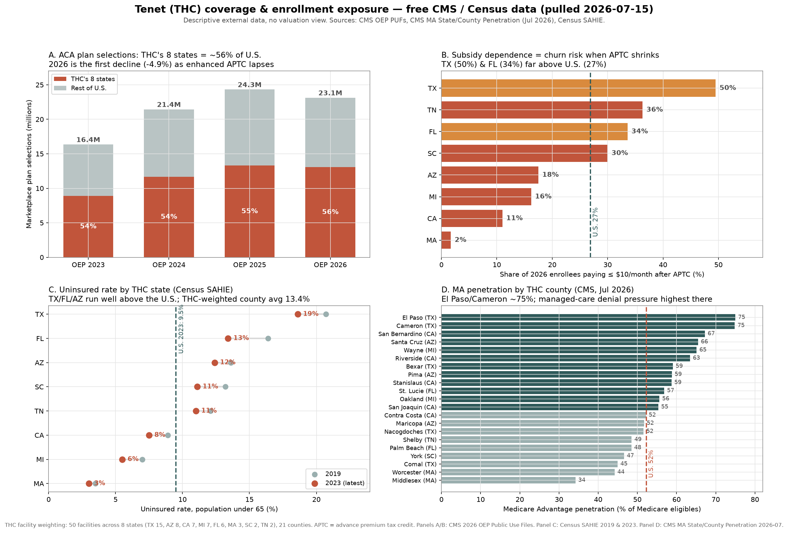
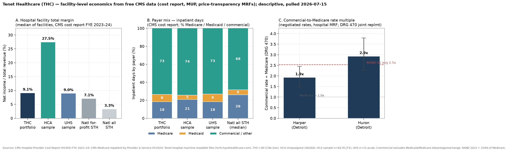
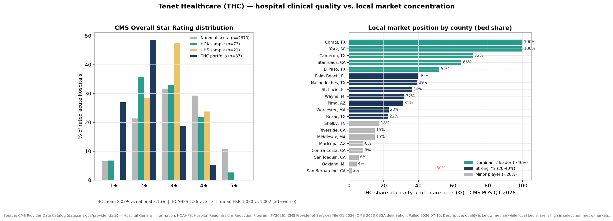
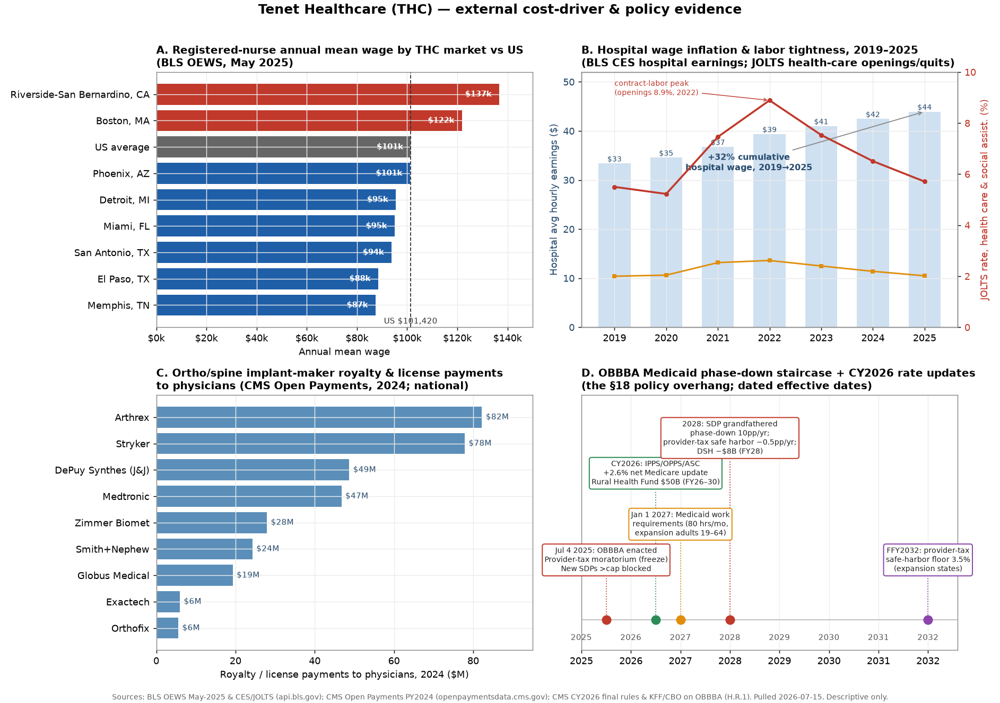
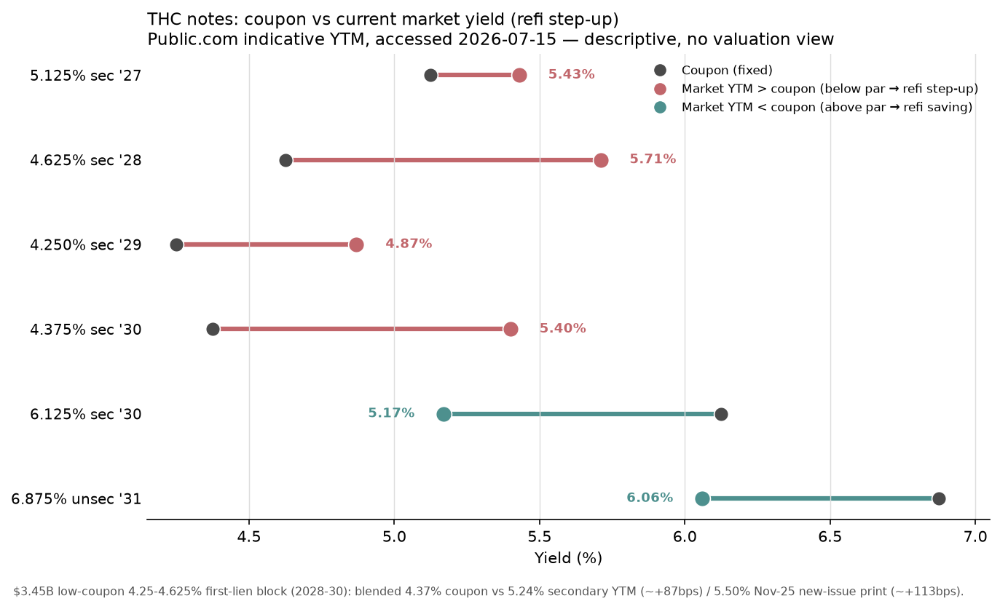

Tenet Healthcare Corporation (NYSE: THC) — Deep-Dive Dossier
Run date 2026-07-14. Fiscal year = calendar year (December 31). Prepared from primary filings (FY2016–FY2025 10-Ks, Q1 2026 10-Q), 48 earnings and 109 event transcripts (2014–2026), nine investor decks (2019–2026), peer filings, sell-side notes, and a live Bloomberg pull (2026-07-14). This dossier describes the business, its history, expectations, the market's pricing record, and a driver-based forward operating model. It contains no valuation judgment, price target, or buy/sell view.
Capitalization (Bloomberg, 2026-07-14 close)
| Item | Value |
|---|---|
| Shares outstanding | ~86.1M |
| Current price | $183.69 |
| Market capitalization | $15,823M |
| Net debt (BBG basis, incl. leases) | $11,938M |
| Enterprise value | $30,530M |
Consensus multiples (Bloomberg BEst, 2026-07-14)
| Multiple (consensus, BEst) | FY2026E | FY2027E | FY2028E |
|---|---|---|---|
| Forward P/E (adjusted EPS) | 10.3x | 10.4x | 9.5x |
| EV / EBIT | 8.1x | 8.0x | 7.7x |
| EV / EBITDA | 6.5x | 6.5x | 6.2x |
| Dividend yield | 0.0% | 0.0% | 0.0% |
Fiscal year end December 31. Pull date 2026-07-14, live terminal. EV = market cap + net debt + noncontrolling/redeemable interests (BBG basis; the ~$2.8B above net debt is the minority-interest wedge). Forward multiples are based on consensus estimates as of the close, no valuation judgment. THC quotes leverage two ways because of its minority structure: ~2.2x on consolidated EBITDA versus ~2.8x on EBITDA-less-NCI (Q1 2026), so the EV/EBITDA on the shareholder's share of EBITDA is nearer 8.5x than 6.5x (see §12, §15).
Run basis
| Item | Detail |
|---|---|
| Run date | 2026-07-14 |
| Fiscal basis | Calendar year (Dec 31); no 52/53-week convention |
| Reporting entity | Two segments — Hospital Operations and Services (75.7% of FY2025 revenue); Ambulatory Care / USPI (24.3%) |
| Latest data cut | Q1 2026 10-Q (quarter ended 2026-03-31); FY2025 10-K filed 2026-02-17 |
| Source refresh | Filings + transcripts through Q1 2026; BBG consensus + comp table 2026-07-14 |
| Scope note | No valuation judgment, price target, or buy/sell view anywhere in this document |
Global caveats
| Issue | Reading note |
|---|---|
| Large minority interests, mostly at USPI | FY2025 net income of $2,367M included $960M attributable to noncontrolling interests ($805M USPI, $155M Hospital). Consolidated Adjusted EBITDA and every segment margin include 100% of the JVs; only ~60% of USPI accrues to Tenet. Read consolidated and Tenet-attributable figures side by side throughout. |
| GAAP is gain- and one-timer-distorted | FY2024 GAAP operating income ($5,956M) and diluted EPS ($32.70) include $2,916M of hospital-divestiture gains; Q1 2026 GAAP EPS ($8.01) includes $413M of Conifer/CHI contract-termination revenue. Use consolidated Adjusted EBITDA and adjusted EPS for the trend; both exclude these items. |
| Segment recast at 2023; footprint reshaped | Conifer (revenue-cycle management) is no longer a standalone segment — it sits inside Hospital "Other revenues" ($2,196M FY2025, shared with employed physicians). Tenet also sold 14 hospitals in 2024, cutting the footprint to 50 hospitals in 8 states. Absolute segment lines are not comparable year to year; the MD&A same-hospital / same-facility bases are. |
| The FY2025 result is over-earning versus the run-rate | Management itself normalizes $148M of one-off favorable supplemental Medicaid out of 2025 Hospital EBITDA before building its 2026 bridge (deck: 2026-02-11 · Q4 2025, slide 5), and guides a $250M ACA-subsidy EBITDA headwind for 2026. The recent quarters already show the inflection (§13.2). |
1. Business description, model & unit economics
Tenet is a for-profit healthcare-services company headquartered in Dallas that runs two economically distinct businesses plus a captive revenue-cycle operation. Consolidated FY2025 net operating revenue was $21,310M (FY2025 10-K, statement of operations).
| Segment | FY2025 revenue | % of total | FY2023 | FY2024 | FY2025 YoY | Operating margin |
|---|---|---|---|---|---|---|
| Hospital Operations and Services | $16,138M | 75.7% | 16,698 | 16,141 | +0% | 10.7% |
| Ambulatory Care (USPI) | $5,172M | 24.3% | 3,866 | 4,534 | +14% | 34.4% |
| Consolidated | $21,310M | 100% | 20,564 | 20,675 | +3% | 16.5% |
Source: FY2025 10-K segment note. Hospital absolute revenue is flat because the footprint shrank via divestiture; on a same-hospital basis the segment grew +6.5% in FY2025.
The two segments are almost mirror images. Hospital Operations is a capital-intensive, labor-heavy, government-payer-exposed acute-care business earning a 10.7% operating margin. USPI is a capital-light, device-heavy, commercial-payer-weighted ambulatory-surgery roll-up earning a 34.4% operating margin on one-third the revenue, so its operating income ($1,778M) roughly equals the hospitals' ($1,730M). Since 2014, USPI has risen from 5% of consolidated Adjusted EBITDA to 44%; that mix shift, not same-store operating improvement, is the main reason consolidated Adjusted EBITDA margin nearly doubled from 11.8% (2014) to 21.4% (2025).▪
1a. Hospital Operations and Services
What it is: 50 acute-care and specialty hospitals in eight states (Texas, Florida, California, Arizona, Michigan, South Carolina, Massachusetts, Tennessee), employed physicians, 132 ancillary outpatient facilities, and Conifer (revenue-cycle management sold to outside health systems). Roughly 75% of admissions arrive through the emergency department (352,964 of 468,250 same-hospital admissions; FY2025 10-K), so demand is largely non-discretionary and grows slowly. The economic model is a spread: administered or negotiated reimbursement per encounter against a mostly semi-fixed clinical-labor and facility cost base.
Revenue composition (FY2025 segment, $16,138M):
| Source | FY2025 $M | % of segment | Note |
|---|---|---|---|
| Managed care (commercial + managed government) | 9,696 | 60.1% | the commercial profit core; ~86% higher yield per admission than government (FY2023 disclosure) |
| Medicare (traditional fee-for-service) | 2,119 | 13.1% | administered price, CMS-set |
| Medicaid (direct) | 1,524 | 9.4% | ~$1,338M (88%) is DSH/supplemental/state-directed; base FFS Medicaid only ~$186M [estimate: $1,524M − $1,338M disclosed] |
| Indemnity and other | 551 | 3.4% | |
| Uninsured (net of charity/price concessions) | 52 | 0.3% | |
| Net patient service revenue | 13,942 | 86.4% | |
| Other revenues (physician practices + Conifer external RCM) | 2,196 | 13.6% | not admission-linked |
| Total segment | 16,138 | 100% |
Source: FY2025 10-K sources-of-revenue note; supplemental Medicaid at line 3926. Facility-level CMS cost reports corroborate the commercial tilt from the bottom up: across 38 provider numbers THC runs 26.6% government (Medicare plus Medicaid) inpatient days versus 34.0% at the national hospital median, i.e. it is less government-dependent and more commercially exposed than the typical U.S. hospital (CMS Hospital Provider Cost Report, FYE 2023–24, pulled 2026-07-15) [data] (see Appendix C).
Two facts matter more than the segment label. First, the reported "Medicaid" line is almost entirely supplemental, not base care: roughly $1,338M of the $1,524M direct-Medicaid line is disproportionate-share-hospital (DSH), state-directed-payment (DPP), and provider-fee revenue set by state programs, not patient care.▪ This block grew +44% in two years ($929M FY2023 → $1,161M FY2024 → $1,338M FY2025) and is the single most policy-exposed dollar in the company, because OBBBA (enacted July 2025) caps state-directed payments and provider taxes from 2027 and cuts Medicaid DSH from October 1, 2027. Second, managed care is 60% of revenue but a larger share of profit: commercial net inpatient revenue per admission ran ~86% above the government per-admission yield (FY2023 10-K), and the commercial book is where the margin is earned.▪
The revenue equation. Same-hospital net patient service revenue reconciles exactly to volume × price: 842,992 adjusted admissions × $16,360 net revenue per adjusted admission (NRAA) = $13,792M ≈ reported $13,791M (FY2025 10-K). Decomposing the +6.6% FY2025 same-hospital growth: volume (adjusted admissions) +1.2%, price/mix (NRAA) +5.3%, and 1.012 × 1.053 = 1.066. Price/mix produced roughly 80% of the growth; volume produced roughly 20%.▪ This is the central fact of the hospital model: it is a price/mix business on a near-flat volume base, and the volume base is structurally capped by the migration of lower-acuity procedures into the ambulatory setting, the same migration that raises residual inpatient acuity and thus NRAA.
Unit economics (per adjusted admission, same-hospital FY2025):
| Line (per adjusted admission) | FY2025 $ | Basis |
|---|---|---|
| Net patient service revenue (NRAA) | 16,360 | FY2025 10-K |
| + Other revenue per adj. adm. | ~2,545 | [estimate: same-hosp other revenue $2,145M ÷ 842,992] |
| = Total revenue per adjusted admission | ~18,905 | reconciles to same-hosp revenue $15,936M |
| − Salaries, wages & benefits | 8,757 | 46.3% of revenue |
| − Supplies | 2,829 | 15.0% of revenue |
| − Other operating expenses | 4,324 | 22.9% of revenue |
| = Cash operating contribution (pre-D&A) | ~2,994 | ~15.8% margin |
| − Depreciation & amortization | ~843 | segment D&A $711M ÷ volume |
| ≈ Operating income per adjusted admission | ~2,050 | ties to segment op. margin 10.7% |
The per-unit build times volume lands within a fraction of a point of reported segment costs (SWB 46.1% + supplies 14.9% + other 23.3% = 84.3% of revenue; FY2025 10-K), so the arithmetic holds. One caveat applies to every cell: segment costs are not split between hospitals, employed physicians (run at or below breakeven as an admissions feeder), and Conifer (higher-margin), so the per-adjusted-admission cost figures are blended. External wage data frames the salaries-and-benefits base: THC's footprint is low-to-mid wage, with a hospital-weighted registered-nurse wage near $99,000 (about 98% of the U.S. mean, and about 92% excluding California and Massachusetts), and the labor tightness that drove the 2022–2025 recovery has fully normalized (health-care job-openings rate back to 5.5% from a 2022 peak of 8.9%) (BLS OEWS May 2025 and JOLTS, pulled 2026-07-15) [data] (see Appendix C).
Demand-driver tree — Hospital Operations.
| Driver | Ultimate exposure (measurable) | Contribution | Robustness | Realized check |
|---|---|---|---|---|
| Volume (adjusted admissions) | count of acute inpatient/outpatient-equivalent encounters at 50 hospitals; 75% ED-driven, so local-market non-discretionary acute demand net of ASC migration | +1.2% FY25, ~20% of growth; ~0% of absolute growth (footprint shrank) | structural but low-amplitude and capped | Confirmed as a low-single-digit defensive contributor, never a growth driver |
| Commercial contracted rates | local negotiating leverage vs concentrated payers (top-10 = 69% of managed-care revenue) + medical-cost passthrough | part of the +5.3% NRAA | structural; management flags "moderating" | positive FY25 |
| Acuity / case mix | higher-complexity residual inpatient mix as low-acuity cases leave for ASCs | part of +5.3% NRAA | structural, multi-year deliberate strategy | positive; the stated 5-year strategy |
| Payer mix | local commercial insurance + ACA-exchange enrollment (~6% of consolidated revenue) | +70bps FY25; −70bps Q1'26 | cyclical / policy | sign-flipped negative in Q1'26 as ACA subsidies expired |
| Supplemental Medicaid / DSH / DPP | state provider-tax and directed-payment programs (~$1,338M) | +$177M FY25 | lumpy, OBBBA-capped from 2027 | flat-to-down in Q1'26 ($304M vs $326M) |
The revenue leg of the growth algorithm — NRAA — is the volatile part: it delivered ~80% of FY2025 same-hospital growth and then reversed to −1.5% in Q1 2026 (§13.2). The margin recovery that drove the 2022–2025 improvement was almost entirely a single cost line: salaries, wages and benefits declined from 50.4% of hospital revenue (FY2022) to 46.1% (FY2025), roughly 430bps, as post-COVID contract labor and premium pay normalized, offshoring to the Philippines Global Business Center scaled, and low-margin hospitals were sold.▪ That lever is now largely spent — SWB per adjusted admission was flat year-over-year in Q1 2026 — so the next leg of margin depends on unproven AI/automation, not a repeatable price × volume compounding.
1b. Ambulatory Care (USPI)
What it is: United Surgical Partners International holds interests in 533 ambulatory surgery centers (ASCs) and 26 surgical hospitals across 37 states — 559 facilities, of which 409 are consolidated and 150 are equity-method (FY2025 10-K, Note 1). USPI does not own facilities outright; it builds and buys majority (usually 51%+) stakes in joint ventures with local physicians and, often, a not-for-profit health-system partner, then operates each under a management-services contract.▪ Its two disclosed earnings streams are a management fee (a percentage of each facility's net revenue) and its equity share of each facility's net income. FY2025 segment revenue was $5,172M and segment Adjusted EBITDA was $2,026M at a 39.2% margin.
The revenue equation — where growth actually comes from. FY2025 segment revenue grew +14.1%, which management decomposed exactly: +$300M inorganic (acquisitions, de-novo development, purchases of controlling interests, net of closures) and +$338M same-facility (FY2025 10-K). Within same-facility, the split between cases and price accounts for the entire number:
| Period | Same-facility net revenue | Cases | Net revenue per case |
|---|---|---|---|
| FY2021 | +14.5% | +15.6% | (1.0)% |
| FY2022 | +4.6% | +2.0% | +2.6% |
| FY2023 | +9.2% | +5.6% | +3.4% |
| FY2024 | +7.8% | +0.3% | +7.5% |
| FY2025 | +7.5% | +0.3% | +7.1% |
| Q1 2026 | +5.3% | (0.3)% | +5.6% |
Source: FY2025 10-K and prior-year MD&A facility-growth tables; Q1 2026 10-Q.
Same-facility case volume collapsed from +15.6% (the 2021 COVID rebound) to roughly zero in 2024–2025 and slightly negative in Q1 2026, while net revenue per case accelerated to +7% and became essentially the entire same-facility number. For 2024, 2025, and Q1 2026, same-facility case volume contributed about zero to organic growth. Management's framing is a secular volume story — surgery migrating from inpatient to outpatient. The realized numbers say USPI's organic growth is almost entirely more dollars per case (acuity mix-up toward total joints, spine, cardiovascular, and urology, plus commercial rate escalators), not more cases; incremental case volume comes from bought facilities, not same-site case growth.▪ A total-joint case nets roughly $15,000–30,000 against $1,500–2,500 for a GI or cataract case, so re-weighting the mix mechanically lifts revenue per case, and same-facility total-joint volume grew +12.2% in FY2025 while low-acuity lines were deliberately shed.
The acuity lever is decelerating and self-limiting. Net revenue per case ran +7.5% → +7.1% → +5.6% (Q1'26), and 2026 same-facility guidance is +3–6%, back toward the stated long-term algorithm▪; a portfolio can only be re-weighted toward orthopedics and spine so far. The regulatory catalyst that could revive same-facility case volume — CMS phasing out the Inpatient-Only list from 2026, moving spine, urology, and some cardiac procedures into the ASC-payable set — is real but, in management's own word, "gradual… over several years," and is not yet in the numbers.
Unit economics. USPI's P&L is thin. As a percent of net operating revenue:
| Line | FY2023 | FY2024 | FY2025 | Q1'25 | Q1'26 |
|---|---|---|---|---|---|
| Equity in earnings (add) | +5.6% | +5.5% | +5.0% | +4.5% | +3.9% |
| Salaries, wages & benefits | 24.9% | 25.1% | 24.5% | 24.7% | 25.0% |
| Supplies | 27.0% | 26.2% | 26.6% | 26.6% | 27.1% |
| Other operating expenses | 13.7% | 14.3% | 14.8% | 15.0% | 15.2% |
| Adjusted EBITDA margin | 39.9% | 39.9% | 39.2% | 38.2% | 36.7% |
Source: FY2025 10-K segment note; Q1 2026 10-Q. Absolute case counts are not disclosed by USPI or its closest public peer, so per-case ASP is a Tier-2 estimate (~$4,300 blended, on ~1.2M consolidated cases, bounds ~1.05–1.45M); the ratios above are exact.
Supplies is the variable, acuity-sensitive line and the single most important cost mechanic: higher-acuity cases require expensive implants and devices, so supplies-per-case rises with the mix. Supplies climbed to 27.1% of revenue in Q1 2026 from 26.6% a year earlier, which management attributes directly to "higher patient acuity and the addition of new service lines." The same acuity shift that lifts revenue per case also compresses the EBITDA margin▪, an important qualification to any "sustainable 40% margin" framing, and the reason the model's 38.0% margin assumption is likely too generous (§17).
The number that reframes the segment. The reported segment revenue and EBITDA are consolidated: they include 100% of the 409 consolidated facilities even though USPI owns roughly half to two-thirds of each. The JV partners' share is stripped out only below EBITDA. FY2025 net income to USPI noncontrolling interests was $805M against segment operating income of $1,778M — about 45%. Tenet-attributable USPI Adjusted EBITDA is therefore about $1.2B, not $2.0B▪ [estimate: two independent bridges — the disclosed 2.24x-vs-2.83x leverage split implies EBITDA-less-NCI ≈ $3,610M, so facility-level NCI EBITDA ≈ $961M, of which the USPI share (by the 805/960 split) ≈ $806M, leaving ~$1,220M attributable; the FCF bridge cross-checks at ~$810M of NCI cash]. Every USPI figure in this dossier should be understood with that ~40% haircut in mind.
Capital intensity. USPI maintenance capex is tiny — $124M in FY2025, ~2% of revenue (D&A likewise ~2.8%). The real growth spend runs through the investing line, not capex: ~$300–350M/yr of controlling-interest acquisitions plus de-novo build cost. FY2025 total growth capital was ~$463M ($339M M&A + $124M capex) to grow revenue $638M, so the "capital-light 2%-of-revenue capex" framing is accurate for maintenance but understates the capital the growth algorithm consumes.
2. Key technologies & technical differentiators
Tenet is a technology consumer, not a technology producer: every technology the business runs on is purchased off the shelf and is equally available to HCA, UHS, CommonSpirit, Ardent, and Surgery Partners. None of it differentiates Tenet.▪ Where these technologies build durable moats, the moats accrue to the vendors, not the hospital operator. What differentiates Tenet is non-technical — USPI's physician-JV network and ASC scale, payer-contracting scale, local market density, and regulation — and those belong to §3 and §4.
Electronic health record (Epic / Oracle Health–Cerner): the clinical and billing system of record that captures the encounter and drives charge capture into net patient service revenue. Switching costs are enormous — an Epic implementation runs into the hundreds of millions and takes years, which is why Epic keeps gaining share (43.7% of U.S. acute-care hospitals, 56.9% of beds, up from 42.3% a year earlier [web]). But that switching cost is a lock-in Tenet pays for, not an asset it owns. Every acute competitor runs the same one or two platforms; there is no pricing power, attach rate, or retention metric that flows to Tenet from its EHR choice. Tenet does not even name its enterprise EHR vendor in any filing or across 48 transcripts, precisely because it is not part of the investment case.
Surgical robotics (Intuitive da Vinci) plus advanced technique and anesthesia: the enabling technology behind USPI's high-acuity outpatient migration — it lets progressively more complex cases move same-day into an ASC. The CEO put Tenet's footprint at "over 150 robotic surgery programs in the ASCs" (Q1 2026 call). But the robot is a purchased capital good ($1.5–2.5M per system), and Intuitive captures the recurring razor-blade economics: 11,395 systems installed at March 2026 and $6.02B of instrument/accessory revenue in 2025 [web]. Any well-capitalized ASC operator can buy the identical robot; the differentiator is which operator has the physician-JV relationships and ASC density to capture the migrating volume, which is a USPI franchise question, not a robotics one.
Conifer revenue-cycle-management platform + Philippines Global Business Center: the one semi-proprietary owned capability — the software, workflow, analytics, and offshore labor that turn a clinical encounter into a collected dollar, serving both Tenet's own hospitals (captive) and external clients. RCM at scale is hard (payer-rules engines across thousands of contracts, coding under audit, denials workflows, cheap accurate labor), but it is a competitive outsourcing market, and Conifer is mid-tier and shrinking externally.▪ The scaled independents are ahead: R1 RCM was taken private in November 2024 at an $8.9B enterprise value, serving 500+ organizations including 93 of the top 100 health systems and managing over $1 trillion of net patient revenue [web]; Optum and Ensemble are the other scaled players. Critically, Conifer's largest external client is leaving — the CommonSpirit/CHI master services agreement terminates December 31, 2026 — so external RCM revenue steps down sharply after 2026. Management calls 2026 a year to "rebase" Conifer and make it "more competitive," a candid admission it is not the scale leader. The offshore GBC is a cost lever (labor arbitrage), not a revenue moat; every large system runs offshore captives.
AI / generative AI (ambient scribe, autonomous coding, agentic workflows): the centerpiece of Tenet's 2026 cost/margin story, and management is explicit that the tools are bought, not built ("third-party EMR-integrated solutions… ambient scribe, automated discharge summaries and autonomous professional fee coding… in various pilot programs"; Q1 2026 call). The tools are commodities available to every operator; the moats belong to Microsoft/Nuance, Abridge, CodaMetrix, and Epic. Industry-wide AI-driven cost deflation gets competed away over time into payer rate negotiations, so it lowers the whole sector's cost base rather than creating durable per-dollar advantage for Tenet.▪ The 10-K frames AI as table stakes — needed to "remain competitive with others who successfully implement… emerging technologies." Where Tenet does have a relative edge is execution: standardized processes across the company make commodity AI easier to deploy at scale than at a fragmented operator▪, and owning both a provider network and an RCM/BPO platform gives more surface area to apply automation against. That is an adoption/scale advantage, not a technology moat. Management explicitly disclaimed the sell-side "provider-owned RCM + AI coding lets you out-negotiate payers" thesis: "Our coding has always been appropriate, compliant… We haven't changed our coding practices" (Q4 2025 call), attributing higher net revenue per case to actual acuity mix.
3. Competitive advantages & moat assessment
Tenet is two businesses with two different moats, reconciled to a consolidated view in 3c.
3a. Hospital Operations — a modest, mostly-local position earning roughly its cost of capital
The Hospital Operations business holds a modest, mostly-local competitive position that produces returns at or only slightly above its cost of capital, and the recent improvement in those returns is cyclical and policy-driven rather than structural.▪ It is not a durable franchise that compounds excess returns without heavy reinvestment.
The segment earns roughly its cost of capital, not durably above it: FY2025 operating income of $1,730M on $16,586M of segment assets is a 10.4% pretax return on segment assets, about 8.1% after tax against a WACC near 8%.▪ The margin recovery of the last three years (segment EBITDA margin 12.0% → 13.5% → 15.7% across FY2023–FY2025) came from post-COVID labor-cost normalization, favorable payer mix, higher acuity, growth in government supplemental Medicaid ($929M → $1,338M), and the divestiture of weaker hospitals — none of which is a moat.▪ In Q1 2026 the segment EBITDA margin already inflected down to 16.7% from 17.5% a year earlier as ACA-exchange coverage eroded and a prior-year supplemental-Medicaid true-up did not recur. Returns that lean on state-directed payments and ACA-exchange volume are exposed, not protected, because OBBBA caps those payments from 2027 and enhanced ACA subsidies expired at the end of 2025.
Management claims: the strategic advantage lives in the ambulatory mix, not the hospitals — CEO Sutaria calls "our diversified asset mix with a focus on ambulatory care" the "significant strategic advantage" (Q1 2026 call). For the hospitals, management claims operational execution (acuity mix-up, transfer centers, trauma and surgical programs, length-of-stay discipline, cost flex) "available in each market," not local market-share dominance. The 10-K's own competition language is candid about the absence of structural protection: hospitals "compete within local areas… on the basis of quality of care; location and ease of access… reputation," physicians are "free to… admit their patients to competing facilities at any time," and not-for-profit competitors hold tax and financing advantages "not available to our facilities."
External sources: the street prefers THC among hospital names, but for its USPI/ASC exposure and defensive positioning, not the hospital franchise. Barclays keeps THC Overweight as "the preferred hospital name due to stronger core growth, more conservative guide, and lower regulatory exposure" while flagging that hospitals broadly "face worsening… earnings risk from ACA subsidy expiration, Medicaid work requirements, SDP phase-downs, softer commercial mix" (OC-Sellside digest, 2026-07-08). This is a relative call within a pressured sector, not a moat call.
Ground-up view: an acute-care operator's returns are set by local density (a locally dominant network negotiates higher commercial rates and captures referral flow), and Tenet is not the local leader. HCA's ~19.8% ROIC versus Tenet-hospital's ~8–10% return on segment assets is the measured value of density Tenet lacks; entry barriers are moderate and patchy (certificate-of-need covers about 27% of Tenet's beds and is weakening — South Carolina sunsets its hospital program in January 2027 — and does not exist in Florida or Texas); buyer power is concentrated (top-10 payers are 69% of managed-care revenue) and government is a price-taker on ~30–40% of revenue; and labor is the largest, least-controllable cost, which makes "cost flex" a skill worth touting but also a treadmill, not a moat. Free CMS quality data shows the essentiality is positional, not quality-based: THC's mean CMS overall star is 2.03 versus 3.16 nationally, only 24% of its rated acute hospitals reach 3-plus stars (versus 72% nationally) and none is 5-star, and it sits about three-quarters of a star below even HCA (2.78) and UHS (2.95) (CMS Care Compare, refreshed 2026-04, pulled 2026-07-15) [data] (see Appendix C).
The advantage sits in the middle of the range: it earns about its cost of capital today, is defensible for now in its chosen markets, and is open to erosion from payer concentration, government-payment policy, and site-of-care migration.▪ Not the structural, self-reinforcing category of Visa/Mastercard or Google search, and not a returns-below-cost-of-capital commodity either. The closest public analogue is UHS — a middle-tier, execution-driven multi-hospital operator with local rather than national scale and comparable margins (15.0% EBITDA vs Tenet-hospital 15.7%) and ROIC (~11.8%); HCA is the same moat mechanism (local density → payer leverage → cost scale) built to its full potential▪, so it is the reference for how much better the identical model performs with scale, not a different model.
3b. Ambulatory Care (USPI) — a real but shared and capital-expensive advantage
USPI holds a real, durable-for-now competitive advantage that is clearly superior to the only public pure-play, yet is nothing like a structural chokepoint and is materially less valuable to Tenet's owners than the headline margin implies.▪
The advantage shows up unambiguously in the numbers: USPI is the #2 U.S. ambulatory-surgery platform and earns a 34.4% segment operating margin (clean ~36.2%) and ~37% EBITDA margin that has held roughly flat for five years, against Surgery Partners (the only public ASC pure-play), which earns an 11.8% operating and 15.9% EBITDA margin and whose shareholders lost money in both FY2025 and Q1 2026.▪ The sources of the edge are concrete: scale in ASC operations and payer contracting (built by the 2020–21 SurgCenter Development deals, which made USPI the orthopedic-ASC scale leader); a physician-JV model in which the surgeons who direct the cases are co-owners, which aligns incentives and locks volume; health-system co-ownership (e.g., Texas Health Ventures Group with Baylor Scott & White) that supplies referral networks and de-risks de-novo builds; and a deliberate mix-up into higher-acuity procedures that lower-acuity competitors cannot easily follow.
Two structural facts cap how exceptional this is to Tenet's owners. First, the moat is shared: the same physician ownership that creates the alignment sends ~45% of the segment's profit to noncontrolling interests ($805M of net income in FY2025, against $1,778M of segment operating income), so Tenet-attributable USPI operating margin is ~19%, roughly half the 34.4% headline.▪ Second, the returns were bought, not compounded: USPI sits on $8.5B of goodwill built by serial acquisition, so Tenet-attributable ROIC is in the high-single to low-double digits▪ [estimate: attributable NOPAT ~$740M ÷ goodwill + allocated intangibles net of NCI-funded assets], above a ~7–8% WACC but far below the 30%+ a 34% segment margin would suggest. And the roll-up must keep spending $300–580M/yr on ASC purchases to grow, because organic case volume is nearly flat.
This sits at the stronger end of that middle range: an advantage that earns excess returns today and is defensible for now (the JV relationships and scale are hard and slow to replicate) but is open to erosion as payer vertical integration advances (SCA inside UnitedHealth/Optum, AmSurg inside Ascension can steer captive volume and press rates) and whose excess returns are structurally shared with physician partners. The closest analogues by the shape of the moat are DaVita and Fresenius (center-based health-services roll-ups where physician medical-director JVs, local density, and a commercial-vs-government payer cross-subsidy drive the economics, grown by serial M&A)▪ — USPI is the better-positioned version because its book is commercial-weighted with a real outpatient-migration tailwind — and Surgery Partners is the instructive counterfactual of what USPI would be as a standalone: the same model without USPI's scale, payer leverage, or balance sheet, which is exactly why its shareholders earn nothing.
3c. Consolidated returns and the peer table
The two moats net to a company that earns a mid-teens consolidated ROIC: above its cost of capital, in the top third of the peer class, but recently earned and substantially the product of mix shift plus deleveraging rather than a widening structural advantage.▪
ROIC (whole-enterprise, gross of minority): NOPAT = GAAP operating income × (1 − 21% statutory tax); invested capital = net debt + total equity including NCI + redeemable NCI. FY2025: $2,771M ÷ $19,261M = 14.4%. Cost-of-capital reference: a levered for-profit hospital operator runs a WACC of ~7.5–8.5%; ~8% is used as the hurdle. This is a business-quality test, not a stock-valuation judgment.
| Operator (FY2025) | Revenue | Op. margin | EBITDA margin | ROIC | 5-yr rev growth | Latest quarter |
|---|---|---|---|---|---|---|
| THC — consolidated | $21,310M | 16.5% | 21.4% | 14.4% | ~+3%/yr (footprint-suppressed) | consol. EBITDA margin 21.6%, ~flat |
| THC — Hospital segment | $16,138M | 10.7% | 15.7% | ~10.4% pretax on seg. assets | flat (same-hosp +6.5%) | EBITDA margin 16.7% vs 17.5% Q1'25 — down |
| THC — USPI segment | $5,172M | 34.4% | 39.2% | ~8–12% attributable [est] | +16%/yr | EBITDA margin 36.7% vs 38.2% Q1'25 — down |
| HCA Healthcare | $75,600M | 16.0% | 20.6% | ~19.8% | +7–9%/yr | op. margin ~15.0%, slightly down |
| UHS | $17,365M | 11.5% | 15.0% | ~11.8% | +9.7% FY25 | rising rev, sector mix pressure |
| CYH (Community Health) | $12,485M | 8.7% (ex $406M gain) | ~12.1% clean | ~7.6% | ~flat/negative | admissions −5.4%, distressed (6.7x leverage) |
| ARDT (Ardent) | $6,324M | 5.1% | 7.6% (lease-heavy) | ~7.4% | +8.1%/yr | +growth, low margin |
| SGRY (ASC pure-play) | $3,309M | 11.8% | 15.9% | ~3.6% | +9.9%/yr | net loss to shareholders persists |
Computed from each operator's own FY2025 10-K plus a BBG bdp returns snapshot (2026-07-14); HCA and CYH margins are derived because neither reports a clean operating-income line, and ROIC uses a net-operating-assets base because three of the operators run stockholders' deficits.
Two comparisons matter. The consolidated 21.4% EBITDA margin looks HCA-like (20.6%) only because USPI (39.2%) is blended in; the hospital segment alone (15.7%) is ~5 points below HCA and its ROIC (~8–10%) is roughly half HCA's (~20%).▪ And the gaps are not converging in Tenet's favor where it counts: the hospital-versus-HCA EBITDA-margin gap narrowed (from ~7.6 to ~4.9 points) but through divestiture and cost normalization, not density; the ROIC gap to HCA (~2x) has not closed; and USPI's clean operating margin has drifted down gently (~38.7% in 2021 to ~36.2% in 2025) on implant-cost creep. The one exceptional-quality asset inside Tenet is USPI, and even there the owner keeps only ~55 cents on the segment dollar.
4. Competitive landscape & market sizing
4a. Hospital Operations — a second-tier operator in a locally concentrated, nationally fragmented market
The U.S. acute-care market is fragmented nationally and concentrated locally, which is the single most important structural fact for pricing power.▪ There are roughly 5,121 community hospitals; for-profit chains own only ~24% of them, nonprofits 58% (AHA Fast Facts 2026 [web]). No operator approaches a national-share position, but in a given metro two to four systems typically hold the bulk of admissions, and a locally dominant system extracts higher commercial rates. Tenet clusters facilities to build that density (~74% of its outpatient centers are in Arizona and Texas "to expand our managed care payer network"; FY2025 10-K), but its usual local competitor is the dominant tax-exempt nonprofit, not another for-profit chain. Facility bed-share data confirms the local position is genuine but bimodal: THC is dominant or sole operator in secondary markets (New Braunfels and Rock Hill 100%, Rio Grande Valley 72%, Modesto 65%, El Paso 52%, Palm Beach 40%) and a strong urban #2 in Detroit (32%) and San Antonio (23%), but a minor share-taker in Phoenix (8%), Boston/Middlesex (15%) and San Bernardino (2%) (CMS Provider of Services file Q1-2026, pulled 2026-07-15) [data] (see Appendix C).
National share (acute admissions, against a ~34M-admission denominator [web, AHA]): HCA ~6.8% (2,297,065 admissions), Tenet ~1.4% (468,250 same-hospital), CYH ~1.2%, UHS-acute ~1.0%, Ardent ~0.5%. HCA is as large as Tenet, CYH, UHS-acute, and Ardent combined. Tenet is a clear second-tier operator whose market power is the sum of its local positions (South Florida, El Paso, Detroit, Southern California, Arizona outpatient), not national scale.▪
Peer scale & KPI table (FY2025):
| Metric | THC Hospital Ops | HCA | CYH | UHS (Acute) | Ardent |
|---|---|---|---|---|---|
| Hospitals (YE2025) | 50 | 190 | 69 | 29 acute | 30 acute |
| Licensed beds | ~12,494 | 50,436 | 10,458 | ~7,073 | 4,281 |
| Beds per hospital | ~246–262 | ~265 | ~152 | ~244 | ~143 |
| Total admissions | 468,250 (same-hosp) | 2,297,065 | 399,255 | 347,736 | 165,682 |
| Segment/company revenue | $16,138M | $75,600M | $12,485M | ~$9,909M acute [est] | $6,324M |
| EBITDA margin | ~15.7% (incl. Conifer) | ~20.6% (incl. NCI) | 12.2% | ~10.5% pre-tax basis | 8.6% (net of NCI) |
| Admissions trend 2023→25 | ~flat / +1.7% FY25 | +3.9% CAGR | −4.3% CAGR | +1.3% same-fac FY25 | +6.2% CAGR |
| Revenue trend 2023→25 | ~flat (same-hosp +6.5%) | +7.9% CAGR | ~flat | acute +11.0% FY25 | +8.1% CAGR |
Compare the revenue-per-admission and margin columns ordinally only: numerators and volume conventions differ across operators (Tenet reports NPSR per adjusted admission, HCA total revenue per equivalent admission), and margin bases differ (HCA's is consolidated including NCI; Tenet's and CYH's are before NCI; UHS-acute is pre-tax income; Ardent's is net of NCI). Sources: each operator's FY2025 10-K.
Who is gaining, who is losing: HCA is compounding (admissions +3.9% CAGR, revenue +7.9%, buying back ~10% of shares over two years) and widening its structural lead — it grows volume and rate while the rest grow rate-only.▪ Ardent is gaining fastest off a small base (+5.3% admissions in 2025, the only peer growing inpatient volume) via its JV/academic model, but it outsources its entire revenue cycle to Ensemble, the mirror image of Tenet's insourced Conifer. CYH is the clearest share-loser (admissions −5.4% in 2025, ~8% over two years) and is distressed.▪ Tenet is deliberately shrinking and high-grading (61 hospitals/9 states at YE2022 → 50/8 states at YE2025), trading absolute scale for margin and redeploying capital into USPI — a chosen strategy, not competitive loss, but it means Tenet is not gaining acute share; it is managing a smaller, better book.▪ This makes the routine screen pairing of Tenet with CYH misleading: the two are diverging (Tenet same-hospital admissions +1.7% vs CYH −5.4%; Tenet ~70% larger by beds per hospital; Tenet's margin ~3.5 points above CYH's), not converging.
The biggest structural forces reshaping the market are the outpatient migration (CMS phasing out the Inpatient-Only list — value-accretive for Tenet only because it owns USPI, value-destructive for pure hospital operators), payer vertical integration (UnitedHealth/Optum, CVS/Aetna, Elevance aligning physician groups and steering volume), and the proliferation of physician-owned freestanding EDs and ASCs siphoning high-margin elective cases. Cost-report data quantifies the second-tier gap directly: on the same Florida/Texas turf and a near-identical government day share (25.6% versus 26.6%), HCA earns roughly 3x THC's facility total margin (27.5% versus 9.1% median), a realized-price and cost-structure gap rather than a payer-mix gap (CMS Hospital Provider Cost Report, FYE 2023–24, pulled 2026-07-15) [data] (see Appendix C).
Conifer sub-unit: a sub-scale RCM operator in a ~$63B U.S. market, dwarfed by Optum (>$15B RCM revenue) and out-grown by R1 (~$2.6–2.7B) and Ensemble (~$46B of net patient revenue managed) [web].▪ Ardent's reliance on Ensemble is direct evidence that independent vendors win the exact mid-sized-system outsourcing business Conifer would target. Post-CHI, Conifer's strategic value to Tenet is primarily as a captive cost-and-margin lever on Tenet's own revenue cycle, not a growth franchise.
4b. USPI — the scale leader, still compounding centers, but facing payer-owned rivals
USPI is the scale leader in scaled ambulatory surgery by a wide margin and the only one of the big-five operators still compounding its center count at a double-digit rate.▪
Peer scale & KPI table (ambulatory surgery):
| Operator (parent) | Centers (latest) | 5-yr center trend | ASC-line revenue | Market share (all ASCs) | Segment margin |
|---|---|---|---|---|---|
| USPI (Tenet) | 533 ASCs + 26 surgical hosp (559) | 310→520 (2020–24), ~14% CAGR | $5,172M | ~8.1% / ~24.3% of chain ASCs | 34.4% op / ~37% EBITDA |
| SCA Health (UnitedHealth/Optum) | ~320 | flat since '22 | not disclosed [est ~$3–4B] | ~5.0% / ~14.9% chain | not disclosed |
| AmSurg (Ascension, 2025–26) | ~250 (→~300 combined) | ~0%, stagnant | not disclosed [est ~$2.5–3B] | ~3.9% / ~11.7% chain | not disclosed |
| HCA Surgery Ventures | ~150 | flat since '22 | inside HCA outpatient | ~2.3% | HCA consol. ~19% |
| Surgery Partners (SGRY) | 176 (157 ASCs + 19 surg. hosp) | declined from '22 peak | $3,309M | ~2.0% | 15.9% consol. adj. EBITDA |
Sources: USPI and SGRY 10-Ks; cross-operator counts and share from Becker's ASC, VMG Health, ASC Data [web, accessed 2026-07-14], with methodology caveats (trade counts differ from filed ownership-interest counts). The US ASC market is ~$44.5–46.8B (2024–25), growing low-to-mid single digits, with roughly two-thirds to four-fifths of centers independent/physician-owned [web].
USPI grew from ~310 centers in 2020 to ~520 in 2024 while every other big-five operator has been flat on center count since 2022, so it is growing into the lead, not merely holding it.▪ USPI's revenue base is ~1.6x SGRY's and growing faster (~16% two-year CAGR vs SGRY's ~9.8%; +10.6% vs +4.5% in Q1'26).▪ But the composition differs: USPI's higher same-facility growth is almost entirely acuity/mix/rate (cases +0.3% FY25), whereas SGRY's is volume-led (cases +3.4%, rate/case +1.4%). USPI matches or beats the pure-play on headline growth but is more dependent on continued rate/acuity escalation and on the acquisition pipeline, both more exposed to payer pushback and deal-price inflation than pure same-store volume.
The sharpest structural pressure is vertical integration: SCA (Optum) and AmSurg (Ascension) can steer captive surgical volume in ways an independent operator cannot, changing the competition from pure roll-up scale to payer/system channel control.▪ USPI's answer is its own health-system-JV model, which is why partnerships like Texas Health Ventures Group matter as much as raw center count.
5. Value chain & profit pools
Tenet is the provider node in a chain that runs employer/patient → health insurer (payer) → Tenet hospital or ASC → clinical labor + device/implant makers + drug supply. Its two segments push the dollar to different upstream layers: the hospital pays labor (SWB 46.1% of revenue, supplies 14.9%), the ASC pays device makers (supplies 26.6%, the largest cost line, above labor at 24.5%). As mix shifts to USPI, Tenet's supplies intensity rises structurally and the device-maker layer captures more. Directly measured price-transparency rates put THC's commercial-to-Medicare multiple at 1.9x in inner-city Detroit and 2.9x in the suburban part of the same metro, with RAND implying above 300% in Florida, California and South Carolina, so realized commercial pricing tracks the local economic mix rather than the metro (Tenet machine-readable files and RAND Round 5.1, pulled 2026-07-15) [data][web] (see Appendix C).
The commercial premium dollar (who sits above Tenet). Managed care is 69.5% of hospital net patient service revenue, so the commercial payer's economics constrain Tenet's pricing. Of a dollar of commercial premium, the payer keeps ~$0.11–0.13 (admin plus profit) and pays out ~$0.87–0.89 as medical claims. The medical-loss ratio is the swing variable: in 2025 UnitedHealth's MLR rose from 85.5% to 89.1% and its net margin declined from ~5.2% to ~2.7% [web], meaning more of the premium dollar flowed through to providers. Tenet reported "negotiated commercial rate increases" plus a "more favorable payer mix" the same year, so part of its 2025 strength is the mirror image of the payers' bad year: the dollar shifted toward providers as utilization rose sharply. That is cyclical, not a structural power shift▪; expect partial reversal as payers reprice 2026–2027.
The Tenet revenue dollar (where it flows downstream), FY2025 consolidated:
| Destination layer | $ per $1 revenue | Named recipients |
|---|---|---|
| Clinical labor (SWB) | $0.408 | nurses, employed physicians, contract-labor agencies, Philippines GBC |
| Supplies | $0.177 | device/implant makers, drug supply chain |
| Other operating expenses | $0.212 | independent physician fees, purchased services, rent, malpractice |
| Depreciation & amortization | $0.041 | (capital) |
| Impairment/restructuring/litigation | $0.009 | — |
| Operating income | $0.165 | — |
| Interest | $0.039 | bondholders |
| Tax + non-operating | $0.015 | — |
| — Net income to NCI | $0.045 | physician / health-system JV partners (mostly USPI) |
| — Net income to Tenet shareholders | $0.066 | Tenet common ($1,407M / $21,310M) |
The striking cell is that minority JV partners receive $960M of net income, equal to 68% of what Tenet common shareholders keep ($1,407M).▪ At the facility level, for every ~$2 that reaches Tenet's owners, physician and health-system partners receive ~$1.37.
The ASC dollar and the device overlay — the highest-margin node. Per dollar of USPI revenue, $0.156 leaves as NCI to the surgeon/health-system partners ($805M / $5,172M). Most of USPI's $1,375M supplies are implants and surgical devices, and device makers earn 61–71% gross margins (Stryker ~64%, Intuitive ~66%, Medtronic ~65%, Zimmer Biomet ~70% [web]). If implants are 70–80% of USPI supplies, the device makers keep roughly $610–690M of gross profit on USPI's implant spend alone [estimate: implant share × ~63% blended device GM; bounds shown with it] — comparable to USPI's entire $805M NCI distribution and larger than the ~$700–800M of Tenet-attributable USPI economics. CMS Open Payments confirms the device layer's leverage over the surgeon: $855M of royalty/license payments flowed to physicians in 2024, ortho/spine-dominated (Arthrex $82M, Stryker $78M, DePuy Synthes $49M), the embedded surgeon-preference relationship that limits USPI's ability to standardize implants to lower-cost vendors (CMS Open Payments PY2024, pulled 2026-07-15) [data] (see Appendix C). At the ASC, the device makers are the single highest-gross-margin layer in the chain, and Tenet's retained share of the outpatient migration is split three ways with the device layer and the physician-owners.▪
Binding constraints. The chain binds at two interfaces. Downstream, payer reimbursement binds: CMS sets the price unilaterally on ~34% of hospital revenue (Tenet is a price-taker), and OBBBA tightens it from 2027. Upstream, the surgeon binds: at USPI the surgeon is simultaneously the scarce input, the JV co-owner, and the demand driver, locked in with equity, minimum-revenue guarantees ($219M max exposure, $138M accrued), and employment. Supplies are not the binding constraint but are a rising cost claim, especially at the ASC: hospital supplies are held to +1.6–2.7% per adjusted admission by HealthTrust GPO scale, but USPI supplies grew +15.8% in FY2025 (against +14.1% revenue) and +12.3% in Q1 2026 (against +10.6%), because implant cost inflation and acuity outrun the GPO's leverage on surgeon-preference items.
Bargaining-power trajectory. Tenet is squeezed on both ends, and the interfaces growing fastest are the adverse ones. Payer→Tenet government slice: no power, tightening from 2027. Payer→Tenet commercial: structurally payer-favorable (concentration, denials, delayed collection) but cyclically provider-favorable in 2024–2025. Tenet→device makers: device makers hold the power and are gaining at the ASC. Tenet→physicians: physicians hold the power; the cost of keeping them aligned ($805M USPI NCI, growing +12.7% year-over-year) scales with USPI growth.
Circular flows. Tenet funds the supply side that generates its own demand — physician minimum-revenue guarantees, JV equity, and puttable redeemable NCI ($2.08B, ~97% USPI, a contingent cash claim outside net debt). The distinctive circular flow is Conifer/CHI in reverse: CommonSpirit, historically Conifer's largest external RCM client, is paying Tenet $1.900B over three years to exit the master services agreement, of which $413M of "Revenue from contract termination" already hit Q1 2026 (excluded from Adjusted EBITDA). It is a one-time exit toll, not recurring demand; Conifer's external RCM revenue collapses after 2026 once its anchor client leaves.▪
6. Secular & industry trends
The consensus framing is that Tenet rides two secular volume tailwinds — inpatient-to-outpatient migration at USPI and an aging, higher-acuity population at the hospitals. The realized record cuts against the volume story: on a same-store basis, Tenet's organic growth in 2024–2025 is almost entirely net-revenue-per-unit (acuity, mix-up, commercial rate), and unit volume is roughly flat in both segments.▪
Growth attribution — realized versus narrative. USPI same-facility case volume was +0.3% in both 2024 and 2025 while same-facility net revenue grew +7.8% and +7.5%, so ~100% of USPI's organic growth came from net revenue per case, ~0% from cases. Hospital same-hospital adjusted admissions grew +1.2% in 2025 while NRAA rose +5.3% (after +4.6% and +2.1% the prior two years) — again, essentially all price/acuity. The secular demand drivers are real at the industry level but at Tenet show up as mix-up within a flat case count plus inorganic facility adds, not same-store volume growth.
Versus industry dollars and the peer cohort. The ASC market grew ~4–9%/yr in dollars; USPI same-facility +7.5% sits at the high end and USPI also adds ~35 facilities/yr, so USPI is gaining share of ASC revenue, concentrated in high-acuity dollars rather than case count. Against the peer cohort, USPI grew like the acuity/rate cohort, not the volume cohort: Surgery Partners grew same-facility +5.1% on cases +3.4% and rate/case ~+1.6%, the mirror image of USPI's +7.5% on cases +0.3% and rate/case +7.1%. USPI matches or beats the pure-play on headline growth but is far more dependent on continued acuity/rate escalation and less on underlying procedure-volume demand. National inpatient admissions have been structurally flat-to-declining for a decade; Tenet's hospital growth is an industry-wide price/acuity phenomenon, not volume.
Slope up: the CMS Inpatient-Only list phaseout (restart CY2026, ~285 mostly-musculoskeletal codes over ~3 years) migrates procedures to lower-cost sites — for Tenet a favorable internal mix shift, since it owns both the hospital losing the case and the USPI ASC gaining it at a ~34% margin versus ~11%.▪ Precedent is large (inpatient total-knee volume declined ~18% the year after its 2018 removal), but management calls the effect "gradual… over several years," and it is not yet in the numbers. CY2026 rate updates are supportive but not a step-change (IPPS +2.6% net, ASC +2.6%); the CY2027 OPPS proposed rule is a modest net positive for for-profit outpatient (Barclays sizes it at ~+50bps of EBITDA growth for HCA/THC/UHS, flipping to a headwind in 2028–29). The ASC migration timeline is orthopedic-led and dated: total knee has been Medicare ASC-payable since 2020, total hip since 2021, total shoulder since 2024, and CY2026 restarts the full Inpatient-Only-list phase-out (about 285 mostly-musculoskeletal codes), with ASC rates running roughly 46% below the hospital outpatient setting (CMS OPPS/ASC rules and MedPAC March 2026, pulled 2026-07-15) [web] (see Appendix C).
Slope down: the coverage-contraction stack is the dominant multi-year overhang. Enhanced ACA premium tax credits expired at end-2025, roughly doubling marketplace premiums; Tenet exchange revenue is ~6% of consolidated revenue and management guides a ~20% exchange-volume reduction and ~$250M EBITDA hit in 2026▪ (Q1 2026 exchange admissions already −10% year-over-year). OBBBA layers Medicaid work requirements (2027), state-directed-payment caps and provider-tax limits (2027–2028), and Medicaid DSH cuts (October 1, 2027) onto the ~$1.34B supplemental Medicaid line and Medicaid volume. CBO estimates combined coverage loss building toward +16M uninsured by 2034 [web]. THC is over-indexed to the coverage-contraction risk: its 8 states hold 56.4% of U.S. marketplace enrollment on 38.8% of population (a 1.46x over-index), and its two largest-footprint states are the two most subsidy-dependent large states, with 49.5% of Texas and 33.6% of Florida enrollees paying $10/month or less after subsidy versus 26.9% nationally (CMS Marketplace public-use files 2023–2026, pulled 2026-07-15) [data] (see Appendix C). The 2026 exchange hit is the small, early tranche; the larger secular bite is 2027–2029, which the sell-side under-models (Barclays models 2027 EBITDA below 2026).▪
What breaks first if the secular story is failing: USPI net revenue per case decelerating toward the +3–6% guide while cases stay flat (essentially all of USPI's organic growth); same-hospital NRAA rolling under +4%; managed-care/commercial admissions mix declining (uninsured/charity share rising past the 4.4% of FY2025); supplemental Medicaid run-rate falling below ~$1.2B as OBBBA bites; and the IPO-list migration failing to show up in 2027–2028 USPI cases.
7. Critical points
-
The consolidated margin story is a mix-shift and cost-normalization story, not a same-store improvement story. Consolidated Adjusted EBITDA margin nearly doubled from 11.8% (2014) to 21.4% (2025), but the drivers are USPI (39.2% segment margin) rising from 5% to 44% of Adjusted EBITDA, plus a one-time 430bps hospital SWB normalization (50.4% → 46.1% of revenue, now flat year-over-year), plus $409M of supplemental-Medicaid growth, plus selling low-margin hospitals. On flat consolidated revenue (+0.9%/yr over the decade), the value came from reshaping the portfolio, not from organic same-store gains.
-
~40% of USPI, and ~40% of consolidated free cash flow, belongs to someone else. FY2025 net income to noncontrolling interests was $960M ($805M USPI, $155M Hospital), and cash distributions to NCI were $809M and growing. Tenet-attributable USPI EBITDA is ~$1.2B, not the $2.0B headline; adjusted FCF after NCI (~$1.6–1.83B guided for 2026, ~$18–20/share) is the number that reaches a common holder. Every consolidated EBITDA, margin, and leverage figure overstates the shareholder's economics by the NCI wedge.
-
Growth is price/mix on flat volume, in both segments. USPI same-facility cases were +0.3% in 2024 and 2025 and −0.3% in Q1 2026; hospital adjusted admissions +1.2%. Essentially all organic growth is net revenue per unit (acuity mix-up + commercial rate), a lever that decelerates as the acuity mix exhausts (net revenue per case +7.5% → +7.1% → +5.6%), with unit growth bought via ~$300–350M/yr of ASC M&A.
-
2026 is guided flat and 2027 is a real flat spot in every scenario. FY2026 Adjusted EBITDA guide midpoint ($4,635M) is +1.5% year-over-year — ~10% core growth net of the ~$250M ACA headwind and 2025 one-offs. 2027 stacks the full-year ACA effect, Medicaid work requirements, and the Conifer/CHI external-RCM cliff against USPI growth; consensus models 2027 EBITDA +1.0% and the most THC-constructive shop (Barclays) models a decline.
-
The forward equity return is manufactured on the per-share line by buybacks. The base operating model compounds consolidated EBITDA ~3.9%/yr but adjusted EPS ~9%/yr, roughly half from operations and half from share-count reduction. Buybacks are pro-cyclical and discretionary (pace rose from $250M in 2022 at ~$42/share to $1,386M in 2025 at ~$158/share to a ~$1.3B run-rate at ~$236/share in Q1'26), and they are the single largest EPS swing (±~$2.0–2.6 on 2030 EPS).
-
The FY2025 result is over-earning versus the run-rate. Management normalizes $148M of one-off supplemental Medicaid out of 2025 Hospital EBITDA, the SWB cost lever is spent, and Q1 2026 already shows hospital EBITDA down 4.1% year-over-year, NRAA −1.5%, and charity/uninsured admissions +9.7%. Do not extrapolate FY2025's +14% Adjusted EBITDA growth.
-
The largest 2027 revenue event rests on an estimate, not a disclosed figure. Conifer's external RCM revenue base (~$0.8–1.0B) and the CHI-specific share (~$600M) are not separately disclosed; "Other revenues" ($2,196M) is not split between physicians and Conifer. The single largest disclosed 2027 revenue event is triangulated, and no sell-side note models it (§20).
-
Tenet levers up into opportunity and delevers only under duress. Every strategic expansion was debt-funded (Vanguard 2013, USPI 2015, SurgCenter 2021); deleveraging (5.63x in 2018 to 2.24x in Q1'26) arrived only after activist pressure and a debt wall forced a CEO change in 2017 (§9). Much of the celebrated 2024 divestiture gain is the round-trip reversal of the 2013 Vanguard hospitals, sold near a cyclical high and taxed $855M.
8. Management claim pressure tests
"USPI's ~37% margins are highly sustainable and USPI is a particularly valuable asset." (management + sell-side.) The margin is real but the owner's share of it is about half what the headline implies: ~45% of the segment's economics accrue to physician/health-system NCI ($805M FY2025, on ~$3.8B of partner equity), so Tenet-attributable USPI margin is ~19% and Tenet-attributable EBITDA is ~$1.0–1.2B against the ~$2.0B consolidated figure the "37% margin" is computed on. Separately, the margin is capital-expensive, not high-return: $8.5B of goodwill puts Tenet-attributable ROIC at ~8–12%, not the 30%+ a 34% margin implies, and same-facility case volume is flat (+0.3%), so the growth is bought and acuity-driven, requiring $300–580M/yr of continuous M&A.
"Tenet's hospital margins have structurally re-rated; the turnaround is done." (consensus.) Of the ~3.7-point hospital EBITDA-margin gain FY2023→FY2025, a meaningful share is one-time SWB normalization (spent, flat in Q1'26) and supplemental-Medicaid growth (~$409M, both at risk from OBBBA and ACA expiration). The re-rating already reversed in Q1 2026 (segment EBITDA margin 16.7% vs 17.5%, EBITDA −4.1% year-over-year). The level (~10–11% operating margin) is defensible; the expansion rate reverts to ~0 and the next leg depends on unproven AI.
"Consolidated margins are now competitive with HCA." (consensus.) The consolidated 21.4% EBITDA margin matches HCA's 20.6% only because USPI's 39.2% is blended in; the hospital segment alone is 15.7%, ~5 points below HCA, and its ROIC (~8–10%) is roughly half HCA's (~20%). Strip USPI and the claim disappears.
"$1.34B supplemental Medicaid is recurring provider revenue." It is booked as revenue and treated as a run-rate, but ~88% of the direct-Medicaid line is DSH/state-directed/provider-fee revenue that rose +44% in two years, is subject to lumpy out-of-period true-ups (the $40M Q1'25 that did not recur), and is the explicit OBBBA phase-down target. A rising share of Hospital EBITDA rests on the exact payment stream Congress voted to shrink.
"2026 is a bounded, one-year transition." (management + consensus.) The CEO said on the Q1'26 call he is "not spending a lot of time thinking about downside risks." But OBBBA is sequenced to bite after 2026 — Medicaid work requirements (Jan 2027), DSH cuts (Oct 2027), SDP/provider-tax phase-downs (2027–2028) — and the company's own 10-K "cannot estimate the OBBBA's impact." Barclays models 2027 EBITDA ($4,596M) below 2026 ($4,635M): $250M (ACA, 2026) + ~$83M/yr (SDP phase-down) + ~$48M per 80bps uninsured + unquantified DSH cuts is a cumulative staircase, not a one-and-done step.
"Pay is tightly tied to performance." (93% say-on-pay.) The largest single incentive weighting — 70% of the annual bonus and the pay-versus-performance company-selected measure — is consolidated Adjusted EBITDA, which is gross of NCI, so ~21% of that metric ($960M / $4,566M) is minority-interest EBITDA that never reaches Tenet holders (§10). Financial targets were hit at or above maximum on essentially every metric 2023–2025, with actuals far above the caps (2025 adjusted EPS $16.78 vs a $12.84 maximum), which points to conservative goal-setting or one-time drivers, not a repeatable base.
"USPI out-grows SGRY, so it's the stronger demand franchise." USPI's +7.5% is all rate/acuity (cases +0.3%) while SGRY's +5.1% is volume-led (cases +3.4%). USPI captures fewer procedures but more dollars per procedure, which makes its growth more rate-dependent and more exposed if the acuity mix-up matures, a different risk profile than "stronger demand."
9. History & inflection points
| Date | Event | Why it mattered |
|---|---|---|
| Oct 2013 | Acquired Vanguard Health Systems (~$4.3B EV incl. ~$2.5B assumed debt, 70% premium) | Roughly doubled the hospital platform on debt; LT debt $5.2B→$11.5B; the root of the 2017 crisis and the deleveraging decade |
| Jun 2015 | Formed USPI JV with Welsh Carson (Tenet 50.1%) | Created the Ambulatory Care segment — now ~half of segment operating income; created the puttable-minority structure |
| Aug–Nov 2017 | Fetter out, Rittenmeyer in; $150M cost-out; deleveraging pivot | Forced by four years of GAAP losses, ~5x leverage, ~75% equity drawdown, and activist (Glenview) pressure; set the turnaround playbook |
| 2020 | COVID; CARES grants; elective shutdowns | Revenue declined while EBITDA rose (margin 14.8%→17.9% and stayed up); the identity shifted from volume/scale to margin/mix |
| Dec 2021 | SurgCenter Development (86 ASCs) + 50-de-novo pipeline, $1.3B of 2030 notes | Established USPI as the orthopedic-ASC scale leader; the key acquisition for USPI growth |
| Jan–Sep 2024 | Sold 14 hospitals (SC/CA/AL) for ~$4.98B proceeds, $2,916M pretax gains | Cut the footprint to 50 hospitals/8 states; funded buybacks and deleveraging; largely the round-trip of the 2013 Vanguard hospitals ($855M tax paid) |
| Jan 2026 | Conifer back to 100% (redeemed CHI's 23.8% for $540M); CHI pays $1.9B to exit by end-2026 | Monetizes the CHI relationship but sets up a post-2026 external-RCM cliff; a committed 2019 spin fully reversed |
Five inflections and the pattern they reveal. The 2013 Vanguard doubling (chosen, offensive) showed Tenet's default response to opportunity is to lever up hard and buy scale — GAAP results never justified the price. The 2015 USPI JV (chosen) was the single best capital-allocation decision of the period, but its value only became visible years later, and the majority-JV-with-puttable-minorities structure is why Tenet must forever report consolidated versus attributable figures. The 2017 leadership crisis (forced) revealed that Tenet does not deleverage or rationalize proactively — it does so only under external duress, and only after replacing a CEO. The 2020 COVID margin step-up (forced catalyst, structural result) completed the pivot from a volume/scale identity to a margin/mix identity, after which consolidated growth stopped being a good proxy for the business. And the 2021–2024 ambulatory-led reshaping (chosen, the payoff) worked — Adjusted EBITDA rose 45% and leverage halved — but it is also the completion of a round-trip, much of the 2024 gain reversing the 2013 binge.
Two episodes management currently omits or reframes: "Vanguard" appears in zero of the 2023–2026 calls despite being the defining strategic decision of the decade and the origin of the leverage that caused the 2017 crisis; and management describes continuous "growth" even though consolidated revenue declined 2019→2020 on divestitures — the accurate description is "smaller but more profitable," which the headline growth story blurs.
10. Management, incentives & capital allocation
Leadership. Tenet has been run by a professional-manager team since a 2017–2019 reset, not by founders. CEO Saum Sutaria (chairman since 2023) joined in 2019 from McKinsey, became CEO September 2021, and now holds both titles (offset by an independent lead director). His watch covers the portfolio transformation, deleveraging to ~2.25x, and a stock that roughly quintupled 2020–2025. CFO Sun Park is an external hire (first a named executive in 2024). Other executives are mostly internal; executive turnover has been low since 2021. Insider ownership is small as a share of the company (Sutaria 533,564 shares, <1%; all insiders 849,233 shares, <1%), so alignment runs through the dollar value of unvested equity (~$150M+ for Sutaria including RSUs/PSUs), not a control stake. The register is index/active institutional money (Vanguard 12.5%, BlackRock 9.4%, Fidelity 8.7%, T. Rowe 8.4%); no activist block today. The transcript record shows a consistent, disciplined narrative that has not quietly mutated as results improved, though the good years have stress-tested the candor claim less.
Compensation. Three layers: base salary, annual cash incentive, and long-term incentive (100% RSUs). The annual incentive is funded 70% on consolidated Adjusted EBITDA and 30% on Adjusted FCF Less NCI; the long-term plan earns 0–200% on Adjusted EPS (50%) and Adjusted FCF Less NCI (50%) over three years with a ±25% relative-TSR modifier against the three hospital peers. Governance features are investor-standard (payout caps, Rule 10D-1 plus broader clawbacks, 6x-salary ownership guidelines, no hedging or pledging, no excise-tax gross-ups). Say-on-pay support runs >93%.
The incentive design measures per-share and cash outcomes on the long-term plan (Adjusted EPS and FCF Less NCI are both NCI-adjusted), but the largest single weighting — 70% of the annual bonus and the pay-versus-performance company-selected measure — is consolidated Adjusted EBITDA, which is gross of NCI; roughly 21% of that headline metric accrues to JV partners, so USPI JV growth Tenet does not fully own still lifts the bonus. Financial goals were hit at or above maximum on essentially every metric 2023–2025 (annual incentive 200%, blended PSU 225%, individual-adjusted payouts 250–300% of target), with actuals well above the caps, which reflects a mix of strong results and conservative goal-setting off serially-beaten guidance. Compensation actually paid tracked TSR tightly (CEO CAP rose to $149M in 2025 as the stock compounded), and Sutaria's 2025 SCT total of $43.1M reflects a one-time $18M retention grant layered on his $18M annual grant. A separate $11M of 2025 special-recognition cash bonuses to the non-CEO executives sits outside the performance framework and pays for retention that the appreciating unvested equity arguably already secures.
Capital allocation, 10 years. Over FY2016–FY2025, operating cash flow totaled $18,059M, against capex $7,521M, business/JV acquisitions $4,039M, purchases of minority interests $2,198M, distributions to NCI $4,425M, buybacks $2,508M, and no common dividend (restricted by indentures).
| Use of cash (FY2016–FY2025) | $M | Note |
|---|---|---|
| Operating cash flow | 18,059 | source |
| Capex | (7,521) | 42% of OCF; rising to $1,010M in 2025 (decade high) |
| Distributions to NCI | (4,425) | grew every year, $218M→$809M, tracking USPI |
| Acquisitions of businesses/JVs | (4,039) | USPI roll-up |
| Purchases of NCI (buying up minorities) | (2,198) | mostly the USPI buy-up 2016–2022 |
| Buybacks | (2,508) | began Q4 2022 |
| Asset-sale proceeds (a source) | +8,648 | 57% of it 2024 alone |
| Common dividends | 0 | none in the window |
Four things stand out. First, the largest discretionary cash flow of the decade went to and around minority partners, not common holders: $4,425M distributed to NCI plus $2,198M buying out NCI ($6,623M combined) versus $2,508M of buybacks. Second, the USPI minority buy-ups (owning ~56% of USPI in 2016, ~95% by 2018, 100% by 2022) were the decade's best-timed capital call — spending ~$2.2B to concentrate ownership of what is now the crown-jewel segment before the ambulatory re-rating. Third, the 2024 megadivestiture, not operating FCF, funded the capital-return acceleration ($4,981M of proceeds bankrolled the buyback ramp to $672M/$1,386M in 2024/2025). Fourth, deleveraging (5.35x in 2019 to 2.25x in 2025) was mostly an earnings-and-cash story, not debt paydown — gross debt declined only ~$1.5B (~10%) while Adjusted EBITDA roughly doubled.
On the discipline tests management always claims: buybacks are not counter-cyclical. Pace rose in lockstep with the price (the smallest tranche, $200M, at $64/share in 2023; the largest, $1,386M, at $158/share in 2025; Q4 2025 repurchases at $208–211), and management says so plainly — "particularly at our current valuation multiples." The program has been accretive to date only because the multiple kept expanding. On per-share value creation, consolidated revenue went essentially nowhere (+8.6% over the decade), so the per-share gains came from margin expansion, mix shift to USPI, and a late share reduction (diluted shares 110.5M peak in 2022 to 90.8M in 2025, −18% net); the count did not fall below its 2016 level until 2024. The framework's one understatement is that "balanced… depending on market conditions" describes a program that in fact accelerated hardest into strength, and it is silent on the largest cash flow of all (~$800M/yr of NCI distributions), which is spoken for before the four stated priorities begin.
11. M&A, divestitures & deal track record
Tenet's record splits into two sharply different eras. The 2013 Vanguard hospital-scale bet was value-destructive: $4.3B enterprise value (70% premium, ~$2.5B assumed debt) for a portfolio weighted toward struggling urban hospitals (Detroit, Chicago-area, MacNeal), which raised leverage to distressed levels and preceded four years of GAAP losses; the $2.430B of accumulated goodwill impairment against the Hospital Operations reporting unit at YE2025 is the residue of that era. The 2015–2026 era — the USPI roll-up plus high-price hospital exits — is disciplined and value-creative: USPI goodwill grew to $8.501B and has never been impaired, and the 2024 divestitures sold 14 hospitals for ~$4.98B against $2,916M of pretax gains (~2.4x carrying value), with the three South Carolina hospitals alone fetching ~$2.4B (Novant), roughly 18x their 2023 pretax income. Over the full window the record is mixed, dragged by Vanguard; over the last ~7 years it is clearly good. The one caution that keeps it out of the top tier: the value creation depended heavily on a hot buyer's market for hospitals and on ASC entry multiples staying elevated; portfolio management executed well, not a structurally unique deal edge.
| Date | Counterparty | Dir | Price | Multiple / gain | Goodwill | Impairment | Outcome |
|---|---|---|---|---|---|---|---|
| Oct 2013 | Vanguard Health Systems | Acq | $4,300 EV (all-cash + $2,500 debt) | ~0.7x sales; ~7–8x EBITDA [web] | legacy | $2,430 (Hospital unit, cumulative) | Value-destructive; urban hospitals later divested |
| Jun 2015 | USPI JV formation | Acq | ~$424 + refinanced $1,500 debt | contribution (49 ASCs + 20 imaging for 50.1%) | 2015 GW $3,374 | none at Ambulatory | Foundational; became USPI's growth driver |
| 2016–2022 | USPI minority buy-ups (Welsh Carson, Baylor) | Recap | $1,473 (to 95%) + $406 (to 100%) | implies ~$8.1B USPI equity by 2022 | — | none | Concentrated the crown jewel before the re-rating |
| Dec 2020 | SurgCenter Development (45 ASCs) | Acq | $1,115 cash | mid-8x EBITDA-NCI, ~5x effective | $1,581 | none | Validated the MSK growth strategy |
| Dec 2021 | SurgCenter Development (86 ASCs) | Acq | $1,125 cash | ASC roll-up | $664 | none | MSK expansion |
| Jan 2024 | SC hospitals → Novant | Div | ~$2,400 [web] | ~18x 2023 pretax income; gain $1,677 | — | — | Standout price |
| Mar 2024 | OC/LA hospitals → UCI Health | Div | ~$975 [web] | gain $527 | — | — | Rich exit |
| 2024 | Central CA (Adventist), Alabama (Orlando Health) | Div | not disclosed | gains $275 + $353 | — | — | Rich exits (prices not disclosed) |
| Jan 2026 | Conifer — redeem CHI 23.8% + MSA termination | Recap | $540 redemption; CHI pays $1,900 over 3 yrs | implies ~$2.27B Conifer equity | — | none | 100% Conifer + ~$1.36B net cash; external-RCM cliff after 2026 |
Sources: FY2016–FY2025 10-K business-combination and goodwill notes; 2024 divestiture prices from press releases [web]; deck economics for the SCD deals. Blocked/terminated deals show regulatory friction and some discipline: the Memphis hospital sale (FTC-challenged, abandoned Dec 2020), the San Ramon 51%-to-John-Muir deal (walked after FTC action), and an earlier California sale FTC-blocked before restructuring to UCI Health.
Synergy and impairment record. No goodwill impairment at either reporting unit across the 2016–2025 window; USPI/Ambulatory has zero accumulated impairment against $8.5B of goodwill despite COVID and a labor-cost shock — the strongest single evidence the ambulatory roll-up has been value-additive. Tenet does not report against named synergy targets deal-by-deal for the ASC roll-up (each deal is small), and the Vanguard $100–200M synergy target was never cleanly reconciled (treat as unverified). The clearest positive round-trip is the hospital portfolio itself — urban hospitals acquired or legacy, exited 2017–2024 at gains (~2.4x book in 2024); the clearest negative is Vanguard as a whole. The two largest ASC deals' EV/EBITDA cannot be computed from filings (no target-EBITDA disclosure), so whether USPI's entry multiples are inflating, the usual mechanism for a roll-up growth fade, is untested (§20).
12. Capitalization & balance sheet
Debt stack (Dec 31, 2025; unchanged at Mar 31, 2026 except finance leases):
| Instrument | Coupon | Maturity | Principal ($M) | Lien |
|---|---|---|---|---|
| Senior unsecured | 6.125% | 2028 | 1,750 | Unsecured |
| Senior unsecured | 6.875% | 2031 | 362 | Unsecured |
| Senior unsecured | 6.000% | 2033 | 750 | Unsecured (new, Nov-2025) |
| First-lien secured | 5.125% | 2027 | 1,500 | 1st lien |
| First-lien secured | 4.625% | 2028 | 600 | 1st lien |
| First-lien secured | 4.250% | 2029 | 1,400 | 1st lien |
| First-lien secured | 4.375% | 2030 | 1,450 | 1st lien |
| First-lien secured | 6.125% | 2030 | 2,000 | 1st lien |
| First-lien secured | 6.750% | 2031 | 1,350 | 1st lien |
| First-lien secured | 5.500% | 2032 | 1,500 | 1st lien (new, Nov-2025) |
| Notes subtotal | 12,662 | 77% secured / 23% unsecured | ||
| Finance leases, mortgages, other | ~6.4% | various | 603 | Secured/other |
| Total long-term debt (net of issue costs) | 13,171 |
Weighted-average cost of debt: principal-weighted coupon on the $12,662M of fixed-rate notes = 5.54%. Blended cash rate on total debt (FY2025 interest $821M ÷ ~$13.17B average) = ~6.2%; the gap is finance-lease interest, issuance-cost amortization, and the brief overlap after the November-2025 refinancing when both the redeemed and the new notes were outstanding. Go-forward coupon-weighted rate on the current stack is 5.54%. Against the secondary market and THC's own November-2025 new-issue print, the step-up on the $3.45B block of 4.25%–4.625% notes is a more modest +87 to +113 bps (about $30–39M/yr, roughly 4–5% of that tranche's cost), because the low-coupon notes are refinanced against a 5.24%–5.50% level, not the higher end of the current curve (Public.com quotes and THC 8-K, pulled 2026-07-15) [web] (see Appendix C).
All notes are fixed-rate; the revolver was undrawn. The maturity ladder is staggered: no maturity before November 2027, the first wall ($1.5B in 2027) fully covered by $2.97B of cash, the largest ($3.45B) not until 2030. Total liquidity is ~$4.9B (cash + $1.9B undrawn ABL revolver). Structural seniority matters: all notes are structurally subordinated to non-guarantor subsidiaries, and USPI sits largely at non-guarantor subs where the JV minority partners also sit, so noteholders and Tenet common are structurally junior to USPI-level claims. Hospital-segment accounts receivable is ~46 days, ~67% from managed care and ~7% self-pay (a self-funding working-capital cycle). Pension is immaterial ($245M obligation); professional/general-liability reserves ($951M) are an operating obligation, not financial debt.
Leverage through time: ~6.0x (2016) → 5.35x (2019) → 3.81x (2021) → 3.89x (2023) → 2.25x (2025), driven by EBITDA growth and 2024 divestiture proceeds, not by principal reduction. On the more economic "Adjusted EBITDA less facility-level NCI" basis the company quotes 2.83x at Q1'26 (vs 2.24x consolidated), and adding the $2.08B of puttable USPI redeemable NCI to net debt lifts economic leverage further: ($10,288M net debt + $2,137M total redeemable NCI) / $4,566M = 2.72x consolidated, or ~3.4x on the less-NCI EBITDA. Interest coverage is 4.27x (FY2025 operating income $3,508M / interest $821M).
Dilution. SBC is small ($66M/$67M/$104M in 2023–2025 against a ~$16B market cap). Net dilution is strongly negative: gross issuance ~0.6M shares/yr against 8,771K repurchased in FY2025, so the diluted count declined from the 2022 peak of 110.5M to 90.8M (−18%); net dilution from SBC is effectively off, and buybacks dominate.
Structural balance-sheet risks, ranked: (1) the $2.08B of puttable USPI redeemable NCI — a contingent cash claim outside reported net debt, whose put windows are undisclosed; (2) structural subordination to USPI at non-guarantor subs, which amplifies (1); (3) refinancing step-up — $3.45B of 4.25–4.625% first-lien notes roll 2028–2030 at recent secured new-issue rates near 5.5% (THC's November-2025 print), a roughly +90–115bp, ~$30–40M/yr headwind as they roll, though staggered and cash-covered; (4) the maturity ladder itself, manageable; (5) the springing ABL covenant, benign at full availability. The structure and coupons are consistent with a BB-category high-yield issuer upgraded as leverage declined. External agency data now fills that gap: Moody's rates THC Ba2 (upgraded from Ba3 on 2026-04-06), and S&P and Fitch both rate it BB- with positive outlooks, one notch below investment grade at all three, with the secured notes rated one-to-two notches above the unsecured (agency press coverage, pulled 2026-07-15) [web] (see Appendix C).
13. Financial history & summary
13.1 Annual summary (FY2016–FY2025 actuals; FY2026E–FY2028E consensus, BBG BEst as-of 2026-07-14)
Income statement ($M unless noted). Tenet has no COGS/gross-profit split; the bridge from GAAP operating income to Adjusted EBITDA is D&A plus impairment/restructuring/litigation less net gains on facility sales.
| Line | FY16 | FY17 | FY18 | FY19 | FY20 | FY21 | FY22 | FY23 | FY24 | FY25 | FY26E | FY27E | FY28E |
|---|---|---|---|---|---|---|---|---|---|---|---|---|---|
| Net operating revenue | 19,621 | 19,179 | 18,313 | 18,479 | 17,640 | 19,485 | 19,174 | 20,564 | 20,675 | 21,310 | 21,990 | 22,313 | 23,433 |
| GAAP operating income | 1,116 | 969 | 1,497 | 1,338 | 1,820 | 2,653 | 2,117 | 2,510 | 5,956 | 3,508 | 3,767 | 3,803 | 3,978 |
| + Depreciation & amortization | 850 | 870 | 802 | 850 | 857 | 855 | 841 | 870 | 818 | 863 | — | — | — |
| + Impairment/restr./litig. & net (gains) on sales | 447 | 605 | 261 | 518 | 469 | (25) | 511 | 161 | (2,779) | 195 | — | — | — |
| = Consolidated Adjusted EBITDA | 2,413 | 2,444 | 2,560 | 2,706 | 3,146 | 3,483 | 3,469 | 3,541 | 3,995 | 4,566 | 4,666 | 4,711 | 4,957 |
| Stock-based comp (memo; not added back) | — | — | — | — | — | — | — | 66 | 67 | 104 | — | — | — |
| Net income to Tenet common | (192) | (704) | 111 | (232) | 399 | 914 | 411 | 611 | 3,200 | 1,407 | 1,680 | 1,501 | 1,564 |
| Diluted WA shares (000) | ~99,300 | ~101,000 | ~104,000 | 103,881 | ~106,000 | 106,263 | 110,500 | 104,800 | 97,881 | 90,833 | — | — | — |
| Diluted EPS (GAAP) | (1.93) | (7.00) | 1.07 | (2.24) | 3.75 | 8.42 | 3.79 | 5.71 | 32.70 | 15.49 | 22.97 | 17.19 | 17.76 |
| Adjusted diluted EPS | 1.04 | 0.81 | 1.86 | 2.68 | 7.92 | 7.58 | 6.80 | 6.98 | 11.88 | 16.78 | 17.80 | 17.70 | 19.30 |
Historical adjusted EPS is the Bloomberg-normalized series; forward is company-defined/BEst (the two converge near FY2025 at $16.11 company vs $16.78 normalized). FY2024 GAAP operating income and EPS are inflated by $2,916M of divestiture gains (visible in the −$2,779M bridge cell). Forward EBIT (used as the operating-income row) is consensus BEst.
Growth (%).
| Line | FY16 | FY17 | FY18 | FY19 | FY20 | FY21 | FY22 | FY23 | FY24 | FY25 | FY26E | FY27E | FY28E |
|---|---|---|---|---|---|---|---|---|---|---|---|---|---|
| Revenue | +5.3% | (2.3)% | (4.5)% | +0.9% | (4.5)% | +10.5% | (1.6)% | +7.3% | +0.5% | +3.1% | +3.2% | +1.5% | +5.0% |
| Adjusted EBITDA | +6.0% | +1.3% | +4.7% | +5.7% | +16.3% | +10.7% | (0.4)% | +2.1% | +12.8% | +14.3% | +2.2% | +1.0% | +5.2% |
| Adjusted EPS | (49.3)% | (22.1)% | +129.6% | +44.1% | +195.5% | (4.3)% | (10.3)% | +2.6% | +70.2% | +41.2% | +6.2% | (0.6)% | +9.1% |
Forward adjusted-EPS growth is on the consensus basis; the FY2025→FY2026 step reflects a basis change (normalized to company-defined).
Margins (%).
| Line | FY16 | FY17 | FY18 | FY19 | FY20 | FY21 | FY22 | FY23 | FY24 | FY25 | FY26E | FY27E | FY28E |
|---|---|---|---|---|---|---|---|---|---|---|---|---|---|
| Gross margin | — | — | — | — | — | — | — | — | — | — | — | — | — |
| Operating margin (GAAP) | 5.7% | 5.1% | 8.2% | 7.2% | 10.3% | 13.6% | 11.0% | 12.2% | 28.8% | 16.5% | 17.1% | 17.0% | 17.0% |
| Adjusted EBITDA margin | 12.3% | 12.7% | 14.0% | 14.6% | 17.8% | 17.9% | 18.1% | 17.2% | 19.3% | 21.4% | 21.2% | 21.1% | 21.2% |
| Net margin (to common) | (1.0)% | (3.7)% | 0.6% | (1.3)% | 2.3% | 4.7% | 2.1% | 3.0% | 15.5% | 6.6% | 7.6% | 6.7% | 6.7% |
| FCF margin | (1.6)% | 2.6% | 2.4% | 3.0% | 16.3% | 4.7% | 1.7% | 7.9% | 5.4% | 11.9% | 14.8% | 11.8% | 12.2% |
No gross-margin line: a hospital/ASC operator has no COGS-vs-gross-profit split. FY2024 operating and net margins are gain-inflated. FY2020 FCF margin is inflated by ~$1.5B of COVID Medicare advances.
Cash flow, returns & balance sheet ($M unless noted).
| Line | FY16 | FY17 | FY18 | FY19 | FY20 | FY21 | FY22 | FY23 | FY24 | FY25 | FY26E | FY27E | FY28E |
|---|---|---|---|---|---|---|---|---|---|---|---|---|---|
| Operating cash flow | 558 | 1,200 | 1,049 | 1,233 | 3,407 | 1,568 | 1,083 | 2,374 | 2,047 | 3,540 | — | — | — |
| Capex | 875 | 707 | 617 | 670 | 540 | 658 | 762 | 751 | 931 | 1,010 | 776 | 816 | 872 |
| Capex / revenue (%) | 4.5% | 3.7% | 3.4% | 3.6% | 3.1% | 3.4% | 4.0% | 3.7% | 4.5% | 4.7% | 3.5% | 3.7% | 3.7% |
| Capex / EBITDA (%) | 36.3% | 28.9% | 24.1% | 24.8% | 17.2% | 18.9% | 22.0% | 21.2% | 23.3% | 22.1% | 16.6% | 17.3% | 17.6% |
| Free cash flow | (317) | 493 | 432 | 563 | 2,867 | 910 | 321 | 1,623 | 1,116 | 2,530 | 3,261 | 2,638 | 2,868 |
| Share repurchases | 0 | 0 | 0 | 0 | 0 | 0 | 250 | 200 | 672 | 1,386 | — | — | — |
| Dividends | 0 | 0 | 0 | 0 | 0 | 0 | 0 | 0 | 0 | 0 | 0 | 0 | 0 |
| ROIC (%) | — | — | — | ~8.5% | — | — | ~11% | — | — | 14.4% | — | — | — |
| ROE (%) | n/m | n/m | n/m | n/m | n/m | ~10% | ~4% | ~15% | 15.5% | 33.5% | — | — | — |
| Net debt (co. basis) | 14,384 | 14,180 | 14,415 | 14,538 | 14,733 | 13,282 | 15,738 | 13,774 | 10,062 | 10,288 | — | — | — |
| Net debt / EBITDA | 6.0x | 5.9x | 5.6x | 5.4x | 4.7x | 3.8x | 4.5x | 3.9x | 2.5x | 2.3x | — | — | — |
Operating cash flow and share-repurchase consensus are not published by BBG (left "—"); consensus capex and FCF are. ROIC/ROE are sparse and noisy: Tenet common equity was negative FY2017–FY2019 (ROE undefined) and normalized operating income is gains-distorted, so only the years with a defensible figure are shown; the recent ROE (33.5%) is flattered by a thin, recently-rebuilt equity base and should be viewed alongside ROIC (~14%).
13.2 Last 8 quarters ($M unless noted)
| Metric | Q2'24 | Q3'24 | Q4'24 | Q1'25 | Q2'25 | Q3'25 | Q4'25 | Q1'26 |
|---|---|---|---|---|---|---|---|---|
| Net operating revenue | 5,108 | 5,126 | 5,073 | 5,223 | 5,271 | 5,289 | 5,527 | 5,368 |
| Revenue YoY % | +0.4 | +1.1 | (5.7) | (2.7) | +3.2 | +3.2 | +9.0 | +2.8 |
| Revenue QoQ % | +0.4 | +0.4 | (1.0) | +3.0 | +0.9 | +0.3 | +4.5 | (2.9) |
| GAAP operating income | 761 | 1,089 | 821 | 943 | 823 | 889 | 853 | 1,296 |
| Consolidated Adjusted EBITDA | 945 | 978 | 1,048 | 1,163 | 1,121 | 1,099 | 1,183 | 1,162 |
| Adj. EBITDA margin % | 18.5 | 19.1 | 20.7 | 22.3 | 21.3 | 20.8 | 21.4 | 21.6 |
| Net income to Tenet common | 259 | 472 | 318 | 406 | 288 | 342 | 371 | 702 |
| Diluted EPS (GAAP) | 2.64 | 4.89 | 3.38 | 4.27 | 3.14 | 3.86 | 4.27 | 8.01 |
| Adj. EPS (Bloomberg comparable) | 2.31 | 2.93 | 3.44 | 4.36 | 4.02 | 3.70 | 4.70 | 4.82 |
| Contract-termination revenue (Conifer/CHI) | 0 | 0 | 0 | 0 | 0 | 0 | 0 | 413 |
| — USPI segment revenue | — | — | — | 1,194 | — | — | — | 1,320 |
| — USPI segment Adj. EBITDA | — | — | — | 456 | — | — | — | 484 |
| — Hospital segment revenue | — | — | — | 4,029 | — | — | — | 4,048 |
| — Hospital segment Adj. EBITDA | — | — | — | 707 | — | — | — | 678 |
Q1 2026 net operating revenue ($5,368M) is stated ex the $413M contract-termination line (total reported revenue $5,781M); GAAP operating income and EPS include that $413M, which is excluded from Adjusted EBITDA. Quarterly segment splits are clean only for Q1'25 and Q1'26. Source: quarterly_history.csv, from the archived 10-Qs.
The inflection for the forward view: consolidated Adjusted EBITDA growth decelerated from +12–19% through 2025 to ~0% in Q1 2026 ($1,162M vs $1,163M), and the two segments diverged.▪ Hospital Adjusted EBITDA declined 4.1% ($678M vs $707M) as ACA-exchange coverage declined and a Q1'25 supplemental-Medicaid true-up did not recur, while USPI kept compounding ($456M → $484M, +6.1%). GAAP EPS nearly doubled (to $8.01) only on the Conifer/CHI one-timer. This is why the FY2025 +14% Adjusted EBITDA growth should not be extrapolated.
13.3 Operational KPIs
| KPI | FY2023 | FY2024 | FY2025 | Q1 2026 | What it reveals |
|---|---|---|---|---|---|
| Hospital adjusted admissions (same-hosp) | ~815k | 833,221 | 842,992 (+1.2%) | +0.6% | Structural low-single-digit volume, capped by outpatient migration |
| Hospital NRAA (same-hosp) | $14,664 | $15,530 | $16,360 (+5.3%) | −1.5% | The price/mix growth driver, and its sign-flip in Q1'26 |
| Hospital SWB % of revenue | 49.0 | 47.5 | 46.1 | flat/adj-adm | The cost-out that drove the margin recovery, now spent |
| Supplemental Medicaid / DSH ($M) | 929 | 1,161 | 1,338 | $304 vs $326 | +44% two-year surge; OBBBA phase-down target |
| USPI same-facility net revenue | +9.2% | +7.8% | +7.5% | +5.3% | Decelerating toward the +3–6% long-term algorithm |
| USPI same-facility cases | +5.6% | +0.3% | +0.3% | (0.3)% | Flat-to-negative — organic growth is rate/acuity, not volume |
| USPI net revenue per case | +3.4% | +7.5% | +7.1% | +5.6% | Essentially all organic growth; acuity mix-up, decelerating |
| USPI consolidated facilities (ASC/surg. hosp) | — | — | 533 / 26 | 541 / 26 | Roll-up cadence (~35 facility adds/yr) — the unit-growth source |
| USPI segment Adj. EBITDA margin | 39.9% | 39.9% | 39.2% | 36.7% | Drifting down on implant-cost creep from the acuity mix |
Each KPI inflection reflects the same mechanics that run through the dossier: hospital revenue growth is price/mix on flat volume, and the price/mix leg turned negative in Q1 2026 on ACA payer-mix loss; the hospital margin recovery was a single cost line (SWB) that is now flat; USPI's organic growth is entirely net-revenue-per-case (acuity mix-up plus commercial rate), decelerating, with unit growth bought via M&A; and USPI's EBITDA margin drifts down as the acuity mix lifts supplies per case.
14. Expectations: internal vs. external vs. base rates
The headline disagreement is narrow in 2026 and real in 2027: management's reaffirmed FY2026 guide and street consensus sit almost on top of each other, but the sell-side splits on whether 2027 is a real earnings air-pocket. Consensus models 2027 Adjusted EBITDA +1.0%; Barclays — the most THC-constructive shop — models a decline. Management gives one-year guidance only (no analyst day, no published long-term model), so 2028 is analyst-built with no company target to anchor it.
| Driver | Internal (guidance) | External (consensus) | Where/why they disagree | Base-rate |
|---|---|---|---|---|
| Consolidated revenue | FY26 $21.5–22.3B (mid $21.9B) | FY26 $21.99B; FY27 $22.31B; FY28 $23.43B | Aligned on 2026; 2027 may not be net of the Conifer external-RCM cliff (unresolved) | +3–5%/yr median for a stable footprint |
| Consolidated Adjusted EBITDA | FY26 $4,485–4,785M (mid $4,635M); ~10% core growth ex-ACA | FY26 $4,666M; FY27 $4,711M (+1.0%); FY28 $4,957M | 2027: consensus +1.0% vs Barclays $4,596M (decline) — the marginal debate | +3–6%/yr; recent +14% reverts; consensus appropriately humble |
| USPI Adjusted EBITDA | FY26 $2.13–2.23B (mid $2.18B, +7.6%) | segment not separately consensus-estimated | ~8.5% management algorithm | high-single-digit as roll-up matures; >12% for 5yr is top-quartile |
| USPI same-facility net revenue | FY26 +3–6% (vs +7.5% realized) | ~7%+ implicit | management signals the acuity lever normalizing | +3–6%/yr (cases ~0–2%, rate/acuity the rest) |
| Hospital Adjusted EBITDA | FY26 $2.355–2.555B (mid $2.455B) | segment not separately estimated | embeds the $250M ACA headwind | level ~10–12% op. margin holds; expansion ~0 |
| Adjusted EPS | FY26 $16.38–18.68 | FY26 $17.80; FY27 $17.70 (flat); FY28 $19.30 | consensus 2027 flat implies little buyback; the model shows EPS growth on continued repurchase | +8–12%/yr if buybacks continue; +3–6% if they slow |
| Adjusted FCF after NCI | FY26 $1.6–1.83B | not separately published | ~$18–20/share — the number that reaches equity | ~60–65% of pre-NCI FCF; grows with USPI |
| ACA headwind (FY26) | −$250M EBITDA / −20% exchange volume | embedded in consensus | management-guided; Q1'26 −10% exchange admissions tracking | bracketed −$150M to −$350M |
Management has a systematic beat-and-raise record: in four of the last five completed years it set a conservative initial guide, raised it two to four times, and landed at or above the top (the initial-to-actual EBITDA gap averaged ~+12%), and it beat consensus adjusted EPS in 18 consecutive quarters. That record is partly mechanical — the street anchors to Tenet's own conservative initial guide — and the 2024/2025 beats were amplified by non-operating levers (divestitures raising the margin, buybacks lifting EPS). The relevant base rate is the 2021→2025 regime, not the 2015–2019 era of chronic guidance cuts under different management. Where a forward model drifts into rare territory is stacking four individually-defensible top-quartile outcomes — USPI sustaining mid-teens growth, hospital margin expanding past ~11%, ROIC climbing toward HCA's ~20%, and double-digit EBITDA growth persisting — which the base-rate reference class flags as a top-decile combination, not a base case.▪
15. Market pricing & valuation history
Descriptive record only; no valuation judgment, no cheap/expensive conclusion, no price target. Current price $183.69 (2026-07-14 close, Bloomberg).
Ten-year table (calendar = fiscal year):
| FY | GAAP EPS | Adj EPS | FY-end px | FY avg | Px ret % | Trail P/E (GAAP) | Trail P/E (adj) | Consensus fwd P/E | EV/EBITDA | P/B (FY-end) |
|---|---|---|---|---|---|---|---|---|---|---|
| 2015 | (1.41) | 2.05 | 30.30 | 45.54 | (40.2) | n/m | 14.8x | 14.0x | 11.2x | 4.3x |
| 2016 | (1.93) | 1.04 | 14.84 | 24.90 | (51.0) | n/m | 14.3x | 7.3x | 9.7x | 3.5x |
| 2017 | (7.00) | 0.81 | 15.16 | 16.75 | +2.2 | n/m | 18.7x | 10.3x | 10.0x | n/m (neg. equity) |
| 2018 | 1.07 | 1.86 | 17.14 | 27.13 | +13.1 | 16.0x | 9.2x | 8.9x | 8.0x | n/m (neg. equity) |
| 2019 | (2.24) | 2.68 | 38.03 | 24.76 | +121.9 | n/m | 14.2x | 12.6x | 9.2x | n/m (neg. equity) |
| 2020 | 3.75 | 7.92 | 39.93 | 26.57 | +5.0 | 10.6x | 5.0x | 13.5x | 7.5x | n/m (near-zero equity) |
| 2021 | 8.42 | 7.58 | 81.69 | 64.32 | +104.6 | 9.7x | 10.8x | 12.7x | 7.1x | 8.5x |
| 2022 | 3.79 | 6.80 | 48.79 | 64.22 | (40.3) | 12.9x | 7.2x | 8.7x | 7.5x | 4.4x |
| 2023 | 5.71 | 6.98 | 75.57 | 66.26 | +54.9 | 13.2x | 10.8x | 12.7x | 7.8x | 4.7x |
| 2024 | 32.70 | 11.88 | 126.23 | 128.02 | +67.0 | 3.9x (gain-distorted) | 10.6x | 11.4x | 7.0x | 2.9x |
| 2025 | 15.49 | 16.78 | 198.72 | 166.09 | +57.4 | 12.8x | 11.8x | 12.2x | 7.3x | 4.1x |
| 2026 YTD | n/a | n/a | 183.69 | 197.39 | (7.6) | n/m | n/m | 10.5x | 6.5x (fwd) | 3.3x |
FY2024 trailing GAAP P/E of 3.9x is meaningless — 2024 net income included ~$2.9B of divestiture gains, so GAAP EPS of $32.70 does not reflect earnings power. The multiples the market actually works with are the forward adjusted P/E (a wide ~5–13x range over the decade, settling ~10–13x since 2021) and EV/EBITDA. EV/EBITDA has compressed to a stable ~7.0–7.8x since 2020 (and ~6.5x forward now), but it ran 8–11x across 2015–2019 (averaging ~9.6x), so it is not a single stable multiple across the whole decade — the compression itself is part of the record. P/B is of limited relevance: Tenet reported negative common equity FY2017–FY2019 and near-zero in FY2020, so those prints are not meaningful; the relevant post-2021 median is ~4.2x, current 3.3x.
Annual returns (fiscal = calendar; no dividend, so price return = total return): the decade splits cleanly into a 2015–2018 collapse (levered, low-margin, portfolio problems; ~$60 to a ~$14 trough) and a multi-year compounding from the 2020 COVID low ($11.01, March 2020) to the 2026 peak ($244.80, March 4, 2026), roughly a 22x move off the trough. 2019, 2021, 2023, 2024, and 2025 each returned 50–122%; 2022 declined 40.3% (a rate-driven de-rating from ~13x to ~7x forward plus contract-labor margin pressure).
Last-12-quarters reaction and the 2025 decoupling:
| Qtr | Report date | Adj EPS | Reaction | What the market reacted to |
|---|---|---|---|---|
| Q1 2024 | 2024-04-30 | 3.22 | +13.3% | Raised FY24 EBITDA guide to $3.5B+; ACA-exchange and commercial strength |
| Q3 2024 | 2024-10-29 | 2.93 | +16.7% | "Once again raising" (cumulative +$445M / +11%); ~58% exchange growth |
| Q4 2024 | 2025-02-12 | 3.44 | (9.1)% | Initial FY25 guide viewed as conservative; ACA/exchange uncertainty |
| Q1 2025 | 2025-04-29 | 4.36 | +11.7% | Q1 well above the guide; reaffirmed early, so market priced the later raise |
| Q2 2025 | 2025-07-22 | 4.02 | (10.7)% | Big beat-and-raise overshadowed by 2026 ACA-subsidy fear; 50bp admissions cut |
| Q3 2025 | 2025-10-28 | 3.70 | (5.3)% | Another raise, but the 2026 policy overhang and higher capex trumped it |
| Q4 2025 | 2026-02-11 | 4.70 | +17.3% | FY26 guide better-than-feared after the ~third de-rating; relief rally |
| Q1 2026 | 2026-04-30 | 4.82 | (1.7)% | 17% EPS beat, but the stock had run and the ACA cliff still dominated |
Tenet beat comparable EPS in 18 consecutive quarters, yet from mid-2025 strong beats stopped being rewarded: the market re-priced to forward policy risk (ACA subsidy expiration, OBBBA Medicaid overhang) rather than the in-quarter print. The 2026 round-trip captures it — a February relief pop to a $244.80 peak, a de-rating through spring as the subsidy-cliff reality set in, and a mid-July leg down triggered by HCA cutting its FY2026 forecast on payer-mix deterioration [web, Healthcare Dive, accessed 2026-07-14], which dragged the sector (THC −5.8% on 2026-07-14). THC (−8% YTD) held up far better than HCA (−22%), consistent with its smaller ACA/exchange exposure. FINRA data shows short interest rose from about 2.9% of float in late 2025 to a 4.8% peak on 2026-06-15 as the ACA payer-mix overhang built, easing to 4.4% by 2026-06-30 on low days-to-cover (about 2–3), while index complexes dominate the register (Vanguard and BlackRock about 9–10% each) and the largest active holder, Glenview Capital, trimmed its THC stake about 20.7% in Q3 2025 (MarketBeat/FINRA and 13F data, pulled 2026-07-15) [data][web] (see Appendix C).
Forward view (based on consensus estimates as of 2026-07-14, at $183.69): the forward adjusted-EPS path is nearly flat — FY2026E $17.80 → FY2027E $17.70 (down slightly) → FY2028E $19.30 — with the 2027 dip reflecting the full-year ACA headwind plus the Conifer external-RCM roll-off. FY2026 GAAP EPS of $22.97 exceeds adjusted $17.80 because of the one-time Conifer/CHI items, so the FY2026 GAAP P/E of 8.0x is not comparable; the adjusted 10.3x is the like-for-like figure. The consensus 12-month price target is $241.52 (BBG BEst) / ~$243 average, range $210–$288 — a spread almost entirely about the 2027–28 policy and terminal-multiple question, not the near-term estimate.
Source: Bloomberg PX_LAST via xBBG. Pull date 2026-07-14.
Source: Bloomberg PX_LAST + BEST_EPS (1BF) via xBBG. Pull date 2026-07-14.
Source: Bloomberg BEST_PE_RATIO (1BF), PX_TO_BOOK_RATIO via xBBG. Pull date 2026-07-14.
Source: Bloomberg PX_LAST via xBBG. Pull date 2026-07-14. 2026 = YTD through Jul 14.
16. Public comparable-company table
Descriptive market context only; no valuation judgment. The P/E and EV/EBITDA columns are consensus multiples, never applied to the Section 17 projections and never judged deserved. Live xBBG/BEst, 2026-07-14.
| Identification | Capitalization | Price performance | EPS estimates (adj.) | EPS revisions | Multiples (adj.) | EPS estimates (GAAP) | Multiples (GAAP) | |||||||||||||||||||||||||
|---|---|---|---|---|---|---|---|---|---|---|---|---|---|---|---|---|---|---|---|---|---|---|---|---|---|---|---|---|---|---|---|---|
| Ticker | Company | Price | Curr. | Fiscal Year End | Market Cap ($mm) | Enterprise Value ($mm) | P/B | Net Debt / 2026E EBITDA | YTD | 1Y | 3Y | EPS 2025A | EPS 2026E | EPS 2027E | EPS 2028E | EPS 2026E Chg 3M | EPS 2026E Chg 1Y | EPS 2027E Chg 3M | EPS 2027E Chg 1Y | P/E 2026E | P/E 2027E | P/E 2028E | EV/EBITDA 2026E | EV/EBITDA 2027E | EV/EBITDA 2028E | EPS GAAP 2025A | EPS GAAP 2026E | EPS GAAP 2027E | EPS GAAP 2028E | P/E GAAP 2026E | P/E GAAP 2027E | P/E GAAP 2028E |
| THC | Tenet Healthcare | 183.69 | USD | Dec | 15,823 | 30,530 | 3.3x | 2.6x | -8% | 3% | 124% | 16.11 | 17.80 | 17.70 | 19.30 | 1.5% | 30.8% | 0.1% | 14.4% | 10x | 10x | 9.5x | 6.5x | 6.5x | 6.2x | 15.33 | 22.97 | 17.19 | 17.76 | 8.0x | 11x | 10x |
| HCA | HCA Healthcare | 363.60 | USD | Dec | 80,661 | 157,541 | — | 3.0x | -22% | -4% | 23% | 27.69 | 30.15 | 33.02 | 36.76 | 0.0% | 7.8% | -0.1% | 4.8% | 12x | 11x | 9.9x | 9.9x | 9.5x | 9.0x | 27.69 | 30.02 | 32.98 | 36.55 | 12x | 11x | 9.9x |
| UHS | Universal Health Services | 144.23 | USD | Dec | 8,731 | 15,864 | 1.2x | 1.9x | -34% | -21% | -6% | 21.84 | 23.45 | 25.32 | 27.45 | 1.0% | 10.2% | -0.1% | 7.3% | 6.2x | 5.7x | 5.3x | 5.9x | 5.7x | 5.5x | 21.90 | 23.40 | 25.16 | 27.30 | 6.2x | 5.7x | 5.3x |
| CYH | Community Health Systems | 3.19 | USD | Dec | 450 | 10,948 | — | 8.0x | 2% | -14% | -27% | 0.86 | -0.57 | 0.02 | 0.09 | -1.7% | -3,226.3% | -29.0% | -89.3% | n/m | 133x | 35x | 8.1x | 7.8x | 7.6x | 2.87 | -0.69 | -0.39 | 0.01 | n/m | n/m | n/m |
| ARDT | Ardent Health Partners | 9.80 | USD | Dec | 1,405 | 3,296 | 1.0x | 3.2x | 11% | -32% | — | 0.95 | 1.05 | 1.19 | 1.25 | 1.6% | -44.9% | -2.1% | -44.1% | 9.3x | 8.2x | 7.8x | 6.6x | 6.2x | 6.0x | 0.96 | 1.06 | 1.09 | 1.10 | 9.3x | 9.0x | 8.9x |
| SGRY | Surgery Partners (ASC pure-play) | 15.12 | USD | Dec | 1,978 | 7,198 | 1.2x | 7.1x | -2% | -33% | -66% | 0.62 | 0.45 | 0.66 | 0.84 | 19.8% | -60.7% | 38.7% | -53.4% | 34x | 23x | 18x | 14x | 13x | 12x | -0.25 | -0.22 | 0.12 | 0.21 | n/m | 124x | 70x |
| DVA | DaVita (dialysis facilities) | 232.41 | USD | Dec | 14,921 | 24,530 | — | 4.1x | 105% | 62% | 124% | 10.61 | 14.81 | 17.47 | 21.18 | 4.7% | 17.2% | 6.3% | 20.1% | 16x | 13x | 11x | 8.4x | 8.1x | 7.8x | 10.30 | 14.42 | 16.91 | 20.44 | 16x | 14x | 11x |
| EHC | Encompass Health (post-acute) | 108.73 | USD | Dec | 10,786 | 13,139 | 4.3x | 1.9x | 2% | -9% | 62% | 5.31 | 6.00 | 6.54 | 7.30 | 1.2% | 8.1% | 1.1% | 7.8% | 18x | 17x | 15x | 9.6x | 8.9x | 8.2x | 5.28 | 6.08 | 6.48 | 6.99 | 18x | 17x | 16x |
| ACHC | Acadia Healthcare (behavioral) | 31.60 | USD | Dec | 2,906 | 4,873 | 1.5x | 4.2x | 123% | 31% | -58% | 1.96 | 1.53 | 1.76 | 1.99 | 1.1% | -49.4% | 4.3% | -45.9% | 21x | 18x | 16x | 8.1x | 7.6x | 7.2x | 0.79 | 1.12 | 1.58 | 1.74 | 28x | 20x | 18x |
| ISRG | Intuitive Surgical (surgical robotics) | 379.50 | USD | Dec | 134,405 | 158,980 | 7.7x | -1.1x | -33% | -27% | 7% | 8.65 | 10.42 | 11.74 | 13.38 | 0.1% | 15.7% | 0.5% | 11.3% | 36x | 32x | 28x | 31x | 28x | 24x | 7.75 | 9.23 | 10.52 | 11.93 | 41x | 36x | 32x |
| UNH | UnitedHealth Group (payer / SCA / Optum) | 425.19 | USD | Dec | 386,134 | 299,822 | 3.9x | 1.9x | 29% | 41% | -11% | 16.32 | 18.48 | 21.03 | 25.00 | 0.2% | -28.3% | 0.7% | -29.3% | 23x | 20x | 17x | 11x | 9.4x | 8.2x | 14.95 | 17.25 | 18.96 | 23.39 | 25x | 22x | 18x |
| SPX | S&P 500 | 7,543.59 | USD | — | — | — | — | — | 10% | 20% | 67% | — | 372.44 | 427.94 | 468.77 | — | — | — | — | 20x | 18x | 16x | — | — | — | — | — | — | — | — | — | — |
| NDX | Nasdaq 100 | 29,586.29 | USD | — | — | — | — | — | 17% | 29% | 90% | — | 1,280.23 | 1,551.14 | 1,705.01 | — | — | — | — | 23x | 19x | 17x | — | — | — | — | — | — | — | — | — | — |
Blanks are real (HCA and CYH have negative book equity, so P/B is not meaningful; index EV/EBITDA is not applicable). Among the pure hospital operators THC trades at 10x FY2026E adjusted P/E and 6.5x EV/EBITDA versus HCA (12x / 9.9x) and UHS (6.2x / 5.9x); the ASC pure-play SGRY is at 34x / 14x. THC's EV/EBITDA uses consolidated EBITDA; on the shareholder's ~$3.6B EBITDA-less-NCI the multiple is nearer 8.5x (§15).
17. Forward model summary
A driver-based operating model, FY2026E–FY2030E, built bottom-up by segment and tied to FY2025 actuals. Bear/base/bull are deltas on drivers, not scenario-level haircuts. Revenue through free cash flow only — no valuation, multiples, or discounting. The base case lands on the reaffirmed FY2026 guide and consensus (2026 has the least dispersion); the variant view is in 2027+.
Assumptions (representative values; provenance tag in brackets).
| Driver | Bear | Base | Bull | Provenance |
|---|---|---|---|---|
| USPI total revenue growth (avg %/yr) | 5.7 | 8.0 | 9.5 | base-rate / mgmt-guidance |
| USPI same-facility organic (avg %/yr) | 3.0 | 4.5 | 6.0 | mgmt-guidance |
| USPI segment adj-EBITDA margin (repr. %) | 35.5 | 38.0 | 38.7 | historical-record — see flag |
| Hospital total revenue growth (avg %/yr) | (0.7) | 1.9 | 3.0 | historical-record |
| Hospital adj-EBITDA margin (repr. %) | 14.0 | 15.0 | 16.0 | historical-record |
| ACA FY26 EBITDA headwind ($M) | (350) | (250) | (150) | mgmt-guidance |
| Supplemental Medicaid / DSH by 2028 ($M) | (300) | (100) | +50 | analyst-judgment — see flag |
| Conifer external-RCM 2027 loss ($M) | (750) | (600) | (450) | analyst-judgment [estimate] |
| Diluted share reduction (%/yr) | (1.5) | (4.0) | (6.0) | historical-record |
| Net interest 2030 ($M) | 915 | 825 | 785 | historical-record |
| Capex 2030 ($M) | 890 | 875 | 865 | mgmt-guidance — see flag |
Output.
| Consolidated Adjusted EBITDA ($M) | 2026 | 2027 | 2028 | 2029 | 2030 | CAGR 25–30 |
|---|---|---|---|---|---|---|
| Bear | 4,376 | 4,261 | 4,317 | 4,484 | 4,673 | +0.5% |
| Base | 4,636 | 4,719 | 4,979 | 5,258 | 5,542 | +3.9% |
| Bull | 4,800 | 5,011 | 5,425 | 5,832 | 6,248 | +6.5% |
| Adjusted diluted EPS ($) | 2026 | 2027 | 2028 | 2029 | 2030 | CAGR 25–30 |
|---|---|---|---|---|---|---|
| Bear | 15.18 | 13.94 | 14.11 | 15.26 | 16.65 | (0.1)% |
| Base | 17.68 | 18.33 | 20.60 | 23.20 | 25.83 | +9.0% |
| Bull | 19.36 | 21.69 | 26.11 | 30.61 | 35.36 | +16.1% |
| Adjusted FCF after NCI ($M) | 2026 | 2027 | 2028 | 2029 | 2030 |
|---|---|---|---|---|---|
| Bear | 1,471 | 1,071 | 1,207 | 1,254 | 1,323 |
| Base | 1,696 | 1,489 | 1,749 | 1,888 | 2,032 |
| Bull | 1,835 | 1,766 | 2,135 | 2,387 | 2,648 |
The base case is a low-to-mid-single-digit EBITDA compounder (+3.9%/yr) whose equity return is manufactured on the per-share line: adjusted EPS +9%/yr, roughly half operations and half buybacks.▪ 2027 is a real flat spot in every scenario (Conifer/CHI external-RCM cliff + full-year ACA + OBBBA onset stacking against USPI growth; base EBITDA +1.8%, bear −2.6%, bull +4.4%). Adjusted FCF after NCI, not consolidated EBITDA, is the number that reaches equity, and it dips in 2027 on the ~$150M Conifer transaction tax plus the flat spot plus growing NCI distributions.
The five most consequential drivers (terminal-year 2030, base): Hospital adj-EBITDA margin (±1.5 pts → ±$266M EBITDA / ±$2.79 EPS — where OBBBA supplemental-Medicaid caps, DSH cuts, and the AI cost program all land); USPI total revenue growth (±2.0 pts → ~±$260M EBITDA — the roll-up/acuity lever, most at risk of over-extrapolation because same-store cases are flat); Hospital revenue growth (±1.5 pts → ~±$200M); USPI segment margin (±2.0 pts → ±$152M); and buyback pace (EBITDA-neutral but ±$2.0–2.6 on 2030 EPS, ~10% of terminal EPS — the largest single per-share swing, and a discretionary, pro-cyclical choice). The base-case implied incremental EBITDA margins run ~20–30%, below the historical same-hospital ~40% and USPI ~34–40%, so the model assumes no repeat of the one-time SWB cost-out and no segment operating leverage at USPI, which is conservative, not aggressive, on operating leverage.
Three weak base-case assumptions, flagged where the output depends on them: - USPI segment EBITDA margin (base 38.0%) — Q1 2026 already printed 36.7%, below the base's own 2026 mark, and supplies rose to 27.1% of revenue on structural acuity dilution. The margin should start below 38.7% and drift toward the bear (35.5%), so the range should widen down; the ~$152M terminal EBITDA sensitivity understates the downside skew. - Supplemental Medicaid / DSH by 2028 (base −$100M) — OBBBA is a multi-component phase-down stacking in 2027–2028 (SDP caps ~$83M/yr, plus provider-tax limits and DSH cuts). The stack points to −$150M to −$250M by 2028, toward the bear (−$300M); the base case is too optimistic on the favorable FL/CO offset, and this is the single largest EBITDA sensitivity. - Capex 2030 (base $875M) — FY2025 capex ($1,010M) was the decade high and management flagged "stepping up growth capital." If that holds, capex reverts toward $950M–1,050M, above both the base and the bear ($890M); a ~$150M upside miss is ~9% of FCF-after-NCI, and the risk is asymmetric to worse FCF.
Two further base-case features rest on discretionary assumptions worth naming wherever base EPS +9%/yr is quoted: the buyback pace (the single largest EPS lever, pro-cyclical, whose downside is correlated with the 2027 EBITDA weakness) and the Conifer cliff (a bounded −$600M estimate, not a disclosed figure, on which the below-consensus 2027 revenue view depends).
18. Risks
1. Government-coverage cliff (ACA EPTC expiration + OBBBA), sequenced 2026→2028 — severe. Enhanced ACA premium tax credits expired end-2025 (exchange ~6% of revenue; management-guided ~−20% volume / −$250M EBITDA in 2026, with Q1'26 exchange admissions already −10%), and OBBBA layers Medicaid work requirements (2027), DSH cuts (Oct 2027), and SDP/provider-tax phase-downs (2027–2028). Leading indicators: exchange re-enrollment rates, uninsured/charity admissions % (Q1'26 charity+uninsured admissions +9.7%), NRAA. Barclays sizes THC uninsured EBITDA-at-risk at ~$48M per 80bps and the SDP phase-down at ~$83M/yr; the whole stack flattens 2027 growth. THC is the sell-side's preferred name on relative (mix-driven) insulation, not a lower-risk hospital franchise. Free CMS data measures the over-exposure: THC's 8 states carry 56.4% of U.S. marketplace enrollment on 38.8% of population (1.46x), and its two largest states are the most subsidy-dependent (49.5% of Texas and 33.6% of Florida enrollees pay $10/month or less versus 26.9% nationally), while HCA's 2026-07-14 guide cut to a $1.0–1.2B exchange drag is the direct read-through that THC's ~$250M / −20% guide may prove optimistic (CMS public-use files and HCA 8-K, pulled 2026-07-15) [data][web] (see Appendix C).
2. Supplemental Medicaid / DSH / DPP dependency — severe. ~$1,338M in FY2025, up +44% in two years, high-margin (~1:1 to EBITDA), lumpy (out-of-period true-ups), and the exact OBBBA phase-down target. Leading indicator: the supplemental-Medicaid revenue line and state program renewals each quarter. New FL/CO programs are a partial offset. This risk and #1 are the same policy cluster and the largest model sensitivity. The external policy timeline confirms the OBBBA staircase is dated and back-end-loaded: Medicaid work requirements and 6-month redeterminations bite by January 2027, the state-directed-payment cap phases grandfathered payments down 10 percentage points a year from January 2028, the expansion-state provider-tax safe harbor drops from 6.0% to a 3.5% floor across FFY2028–FFY2032, and DSH takes a single −$8B cut in FY2028 (KFF/CBO briefs and CMS May-2026 SDP rule, pulled 2026-07-15) [web] (see Appendix C).
3. Managed-care concentration and payer denials — high. Managed care is ~70% of hospital net patient service revenue; top-10 payers are 69% and 67% of hospital AR. Management concedes denials/disputes are "too high" versus pre-pandemic. Leading indicators: NRAA (Q1'26 −1.5%), denial rates, AR days, commercial-vs-government mix.
4. Outpatient migration hollowing out inpatient economics — high, structural, and double-edged. CMS is pushing volume to lower-cost outpatient/ASC settings (Inpatient-Only list phaseout, site-neutral expansion) — negative for Hospital Operations (10.7% margin), positive for USPI (34.4%). Tenet owns the destination, so it is structurally hedged among for-profit peers, but the acute inpatient surgical franchise erodes. Leading indicators: inpatient-vs-outpatient surgical split, USPI same-facility cases, case-mix index (down for the first time in Q1'26).
5. Labor cost / clinical-staffing / unionization — high. ~20% of hospital employees unionized (27 hospitals); California healthcare minimum-wage steps run through 2028; SWB is ~46% of hospital revenue and the cost-flex lever is now spent. Leading indicators: SWB % of revenue, contract-labor %, CBA/strike calendar.
6. Leverage — moderate, well-mitigated. $13.171B total long-term debt, interest = 23% of operating income, net leverage 2.24x / 2.83x-less-NCI. All fixed-rate, revolver undrawn, maturities staggered 2027–2033, robust adjusted FCF. The peer-failure template is Steward Health Care (Chapter 11, May 2024 — leverage + sale-leaseback rent + Medicaid dependence); THC is far healthier and owns rather than sale-leases most real estate. CYH (a peer) remains distressed with negative equity.
7. Cybersecurity / IT disruption (incl. Conifer RCM) — high-consequence, event-driven. THC suffered an April 2022 incident with exfiltration and "significant costs"; cyber-insurance premiums are up and coverage down. The concrete template is the Change Healthcare ransomware (Feb 2024, ~50% of U.S. claims, providers billed manually for months) — directly relevant because Conifer is an RCM/claims business whose outage would cascade to hospital cash flow.
8. Conifer / CommonSpirit wind-down — moderate, transaction-specific. External RCM revenue collapses after 2026 (CHI MSA terminates Dec 31, 2026; CHI pays $1.9B one-time). The magnitude is obscured inside "Other revenues" ($2,196M), and the FY2025 10-K added explicit RCM-competition language ("no assurance of replacing contracts when they expire").
9. USPI JV structure — moderate, quality-of-earnings. FY2025 NCI $960M; consolidated results overstate Tenet economics; $2.08B of puttable USPI redeemable NCI is a contingent cash claim outside net debt with undisclosed put windows; some JV arrangements do not qualify for the Anti-kickback safe harbor. Leading indicators: redeemable-NCI balance, put exercises, the consolidated-vs-less-NCI leverage gap.
10. Portfolio-reshaping / divestiture execution — moderate. Serial divestitures break comparability and leave retained-liability and lease-assignment tails; USPI serial M&A includes integration and overpay risk. FY2025: $61M impairment + $44M restructuring.
11–13. Lower: macro/medical inflation and tariffs on device-heavy USPI supplies; professional/general-liability "nuclear verdicts"; and AI adoption/execution risk (the double-edged 2026 margin lever, still pilot-stage).
The correlation map is the real risk: #1, #2, #3, #4, and #11 are one cluster, and OBBBA sequences them to stack in 2027–2028 — EPTC expiry worsens payer mix and uncompensated care while supplemental Medicaid phases down and inpatient volume migrates, and a cyber/RCM event landing in that window would compound cash-collection stress. The single-name mitigant against most of the cluster is USPI, but USPI is also the segment most exposed to elective deferral in a recession, so the hedge is imperfect.
19. Source disclosure
Databases used: archived FY2016–FY2025 10-Ks and Q1 2026 10-Q (primary, reconciled); 48 earnings and 109 event transcripts (Call-extraction, 2014–2026); nine investor decks (Quartr, 2019–2026, rendered to slides); peer 10-Ks (HCA, UHS, CYH, ARDT, SGRY, plus payers UNH/ELV/HUM/CI); OC-Sellside digest (6 THC reports, 2026-06-30→07-08); nine DEF 14A proxies (2018–2026); live Bloomberg terminal (prices, returns, historical and current consensus, comp table, 2026-07-14).
Gaps and failures (from data_inventory.md): Metrics-extraction XBRL CSVs are systematically column-mislabeled (income/cash-flow +2 years, balance sheet +1), so the entire 10-year series rests on Bloomberg plus hand-read 10-Ks (which reconcile) without the usual third-source cross-check; Daloopa was unavailable, so no source-linked workbook was built. 10K-redlines does not cover THC, so risk-factor deltas were computed by hand rather than a systematic redline. Agency credit ratings were not pulled during the main run; they were added post-run in the external-data enrichment (Appendix C: Moody's Ba2, S&P BB-, Fitch BB-). OC-Call-extraction guidance scorecards were not built (reconstructed from press releases + transcripts). The sell-side digest spans only a two-week window, so there is no multi-year thesis history. Bloomberg's stored single-quarter consensus-surprise magnitude is unreliable for THC (direction reliable, magnitude not); the multi-year peer ROIC panel pull was throttled, so ROIC persistence rests on a current cross-section plus a general fade base rate.
Discrepancy log (stated as substance): GAAP operating income and net income are not comparable across years (FY2024 includes $2,916M of divestiture gains; Q1'26 includes $413M of contract-termination revenue) — the trend uses consolidated Adjusted EBITDA and adjusted EPS. Company Adjusted EBITDA ($4,566M FY2025) differs from BBG standardized EBITDA ($4,638M) by definition. "Adjusted EBITDA less facility-level NCI" and "Adjusted FCF after NCI" are earnings-release metrics not reconciled in the 10-K; the FY2025 less-NCI EBITDA (~$3,610M) is an estimate from the disclosed 2.83x/2.24x ratio. Payer-mix flipped within one quarter (favorable FY2025, unfavorable Q1'26) — both correct for their period. One value-chain figure was corrected in this synthesis: UnitedHealth's 2.7% 2025 figure is its net margin (operating margin ~4.7%), not operating margin; and hospital-segment AR self-pay is ~7%, not ~4%.
Web sources (with counts): ~20 distinct web citations across healthcare trade press and market-research aggregators (Becker's ASC, VMG Health, ASC Data, ASC News), regulator/analyst data (AHA Fast Facts, CBO/KFF coverage estimates), device-maker and payer financials (stockanalysis.com), KLAS EHR share, Intuitive/R1 economics, HealthTrust corporate materials, and the 2026-07-14 selloff coverage (financialcontent, Healthcare Dive). No web claim was flagged "[web, unverified]" — the adversarial pass re-fetched the material web sources and confirmed them (two web figures were corrected as noted).
Estimates by method (each with bounds inline): Tenet-attributable USPI EBITDA (~$1.2B; two-bridge from disclosed leverage + FCF-less-NCI splits); Conifer external RCM base (~$0.8–1.0B) and the CHI 2027 loss (~$600M, bounds −$450M to −$750M; from the remaining-performance-obligation fixed-fee anchor); the physician/Conifer split of "Other revenues"; USPI per-case ASP (~$4,300, bounds ~1.05–1.45M cases; from segment revenue ÷ estimated cases); device-maker gross-profit pool (~$610–690M; implant share × device GM); base-FFS Medicaid residual (~$186M); EBITDA-level NCI split; and the forward-model driver estimates in §17.
Claim-verification coverage: 74 of 153 eligible claims were verified under tiered sampling (high-confidence claims with local citations sampled, not exhaustively checked); unverdicted claims are used as written with their citations. Of the sampled claims, most were supported; one market-pricing claim was corrected (EV/EBITDA is a stable ~7.0–7.8x only since 2020, not "7–8x across 2015–2025" — it ran 8–11x in 2015–2019), and the three model assumptions flagged in §17 were judged weak by the adversarial pass.
Edge datasets: none. The edge registry returned zero coded/mosaic datasets for the healthcare_provider archetype (the registry covers payers, not providers). See Appendix C for the candidate provider-side external sources available on demand.
20. What we still don't know / monitoring KPIs
Unresolved material gaps:
- Conifer as a standalone economic unit is invisible. Nothing in the disclosures sizes the Conifer external-RCM revenue base, the post-2026 CHI-termination cliff, or the physician-practice/Conifer split of the $2,196M "Other revenues." The bounded ~$600M 2027 revenue step-down is the key input to the 2027-flat-spot conclusion and the below-consensus 2027 revenue view, so the single largest disclosed 2027 revenue event rests on triangulation. Watch: the "Other revenues" line trajectory and any Conifer external-client disclosure.
- Local (MSA-level) hospital market share was never measured — only national ~1.4% admissions share. The Hospital moat view ("weak systemwide, strong in select local markets — El Paso, Detroit, South Florida") is asserted, not evidenced; it sets commercial-payer negotiating leverage. Watch: CMS/AHA facility-level or all-payer-claims data by metro.
- Medicare Advantage exposure is never isolated. Payer mix is disaggregated only to "managed care" (69.6% of admissions), and USPI's payer mix is undisclosed entirely, so the exposure to the fastest-growing, higher-denial, lower-rate MA channel — the dimension most likely to erode the commercial-equivalent yield the price/mix thesis depends on — cannot be sized. Watch: CMS MA-enrollment files by county; any USPI payer-mix disclosure.
- The employed-physician enterprise (~$1.3B of "Other revenues") is treated as a residual. No analysis of physician headcount, loss rate, or the admissions it drives, leaving the referral-feeder mechanic behind hospital volume unquantified.
- No multi-year sell-side thesis history — the digest holds 6 reports over a two-week window, so how consensus narrated the 2022 selloff or the 2024 re-rating is not anchored.
- Pre-2023 Tenet-attributable (post-NCI) per-share history cannot be reconstructed — the NCI-by-segment split exists only from FY2023, so the number that actually reaches equity across FY2014–FY2022 is a gap, which weakens the "durable-returns record is only ~5 years old" base-rate claim.
- No provider-side external datasets were pulled — CMS Hospital Compare/HCAHPS quality, Medicare cost-report margins, CMS POS facility files, CMS MA-enrollment, and state all-payer-claims data would resolve the local-share, quality-premium, and MA-exposure gaps (available on demand; see Appendix C).
- No systematic 10-K redline for THC; material disclosure shifts (the dropped ~86% commercial-yield-gap figure, the dropped net-leverage sentence, the added RCM-competition language) were caught ad hoc.
- Agency credit ratings and the 2016→2025 upgrade path were never pulled, leaving the deleveraging narrative uncorroborated by a rating and the refinancing-cost estimate on the 2028–2030 note roll unanchored to a market spread.
- The peer Q1'26 charity/uninsured cross-check was not run — whether THC's +9.7% same-hospital charity/uninsured admissions step-up is THC-specific or sector-wide is the most important 2026 payer-mix signal and lacks a peer benchmark.
- The ~$220M/yr "purchases of noncontrolling interests" is not decomposed into growth buy-ups versus put-driven cash calls, and the put-exercise windows on the $2.08B puttable USPI redeemable NCI are unknown — so the timing of that contingent cash claim cannot be sized.
- The $427M FY2026 "Growth & Cost Efficiencies" bridge line is not split between USPI volume/acuity and real AI/GBC automation cost-out, so the AI/automation lever the margin bridge depends on is unquantified.
- USPI ASC entry multiples' inflation is untested — the two largest deals (2020/2021 SurgCenter) have no disclosed target EBITDA, so the EV/EBITDA actually paid is uncomputable, yet rising entry multiples are the stated mechanism for the roll-up growth fade.
The KPIs that would resolve the thesis first: USPI net revenue per case decelerating toward +3–6% with cases still flat; same-hospital NRAA staying negative or under +4%; the supplemental-Medicaid run-rate falling below ~$1.2B as OBBBA bites; the charity/uninsured admissions share rising past 4.4%; the "Other revenues" line's 2027 step-down; and the buyback pace, which sets roughly half of forward per-share growth.
Appendix A — Investor-presentation insights & key slides
The nine archived decks (2019–2026) are earnings-deck-heavy (Tenet holds no formal analyst day). The additive material beyond the filings and transcripts:
- The strategic pivot in one chart. Ambulatory rose from ~4% of Tenet Adjusted EBITDA (2014) to ~42% projected (2021) — the longitudinal mix view the filings never show. [deck: 2020-12-10 · SCD acquisition, slide 11] (§1, §3)
- The Conifer spin that never happened, then reversed. The 2019 deck committed to spinning Conifer as "the greatest opportunity for value creation" by Q2 2021, detailing a 2018 auction (74 parties, 9 bids, buyers guided to normalized 2018 EBITDA of $308M, offers judged inadequate); in January 2026 Tenet did the opposite, buying back CHI's 23.8% minority and winding the contract down — a management-candor artifact only the deck record preserves. [deck: 2019-07-24 · Conifer Spin-Off, slides 5, 8, 9] (§9, §11)
- SurgCenter Development economics. ~$1.1B for up to 45 centers, ~$210M Adjusted EBITDA, mid-8x EBITDA-NCI multiple (~5x effective), ~$40–50M synergies, ~28% EPS accretion by year 1 — the deal detail the filings omit. [deck: 2020-12-10 · SCD, slides 3, 4, 9, 10] (§11)
- USPI roll-up return framework. Facilities 267 (2017) → 559 (2025) at an 8–10x initial / 5–7x effective (post-synergy, three-years-out) acquisition multiple, <2x de novo — management's own framework, not in the filings and dependent on hitting the synergy ramp. [deck: 2026-02-11 · Q4 2025, slide 11] (§11)
- USPI JV-partner scale. 10,000+ physicians on staff, 4,000+ physician partners, 50+ health-system partners — the people who direct case volume and co-own the JVs, the scale metric not in the 10-K. [deck: 2020-12-10 · SCD, slide 5] (§3, §4)
- The FY2026 EBITDA bridge. 2025 Adjusted EBITDA $4,566M less $148M of non-repeating supplemental Medicaid (so 2025 Hospital was over-earning) → 2025 normalized $4,418M → +$40M non-recurring Conifer deferred-revenue recognition → −$250M ACA premium-tax-credit expiration → +$427M Growth & Cost Efficiencies → 2026 midpoint $4,635M. Two additive facts: management itself strips the $148M, and the ACA hit is quantified and concentrated in Hospital. [deck: 2026-02-11 · Q4 2025, slide 5] (§13, §17)
- The FY2023 government-funding sensitivity bridge. −$215M of 2022→2023 government-funding reductions itemized (Medicare 20% COVID add-on $50M, 340B $43M, FMAP $25M, sequestration $37M, DSH $40M) — the cleanest single view of how much Hospital EBITDA rides on discrete government line items. [deck: 2023-07-31 · Q2 2023, slide 7] (§6, §18)
- The divested-hospital margin math. The five hospital markets divested since 2017 ran ~$2.5B of revenue at ~$105M of EBITDA — a ~4% margin, far below the retained mix, so selling them was margin-accretive. [deck: 2023-07-31 · Q2 2023, slide 5] (§10, §11)
- USPI case-mix shift. Gastrointestinal overtook musculoskeletal as the largest USPI specialty (MSK 36% / GI 34% in 2022 → GI 42% / MSK 30% in 2025) — a trend the pie charts reveal and the filings do not. [deck: 2026-02-11 · Q4 2025, slide 10] (§1, §6)
- Dual-leverage framing. Net leverage on EBITDA declined from 5.86x (2017) to 2.24x (Q1'26) and on EBITDA-less-NCI from 6.95x to 2.83x — the ~0.6x gap is the size of the USPI-minority claim, shown correctly side by side. [deck: 2026-02-11 · Q4 2025, slide 14] (§12)
The 27-slide key-slides gallery (chronological, 2019→2026) is rendered from archive\THC\decks\key_slides\captions.json.
Appendix B — Web source excerpts
- KLAS EHR share — supports Epic 43.7% of U.S. acute-care hospitals (§2). KLAS 2025 acute-care EHR market report [web, accessed 2026-07-14]. "Epic … 43.7% of the U.S. acute-care hospital EHR market and 56.9% of hospital beds, up from 42.3% a year earlier."
- Intuitive Surgical economics — supports the razor-blade lock-in (§2, §5). Intuitive Surgical Q1 2026 disclosures [web, accessed 2026-07-14]. "Installed base grew to 11,395 systems … on ~3.15 million da Vinci procedures in 2025 (+18% YoY), generating $6.02 billion of instrument/accessory revenue."
- R1 RCM take-private — supports the RCM scale gap (§2, §4). Becker's / deal coverage [web, accessed 2026-07-14]. "R1 RCM … taken private by TowerBrook and CD&R in November 2024 for an $8.9 billion enterprise value … serving 500+ organizations including 93 of the top 100 health systems and managing over $1 trillion of net patient revenue."
- AHA Fast Facts — supports the hospital-count fragmentation (§4). AHA Fast Facts on U.S. Hospitals, 2026 ed. [web, accessed 2026-07-14]. "~5,121 community hospitals: 2,984 nongovernment not-for-profit, 1,224 investor-owned, and 913 state/local-government."
- ASC market share and size — supports the USPI scale table (§4). Becker's ASC "Top 5 ASC operators by market share 2025"; ASC News/ASC Data [web, accessed 2026-07-14]. "USPI 8.1%, SCA 5.0%, AmSurg 3.9%, HCA 2.3%, Surgery Partners 2.0% … market ~$45.6B in 2025."
- Device-maker gross margins — supports the value-chain profit-pool split (§5). stockanalysis.com [web, accessed 2026-07-14]. "Stryker gross margin 63.9%; Zimmer Biomet 71.5%; Medtronic ~65%; McKesson 3.6%."
- UnitedHealth MLR — supports the commercial-premium-dollar analysis (§5). Becker's / Fierce Healthcare [web, accessed 2026-07-14]. "UnitedHealth's 2025 medical care ratio rose to 89.1% (from 85.5%)." (Its 2.7% figure is the net margin; operating margin was ~4.7%.)
- AmSurg / Ascension and SCA / Optum — supports the vertical-integration threat (§4). Digital Health News / Healthcare Dive [web, accessed 2026-07-14]. "Ascension completes $3.9bn AmSurg acquisition after FTC approval … creating a system-owned operator with ~300 ASCs across 34 states."
- 2026-07-14 sector selloff — supports the market-pricing episode (§15). financialcontent / Healthcare Dive [web, accessed 2026-07-14]. "THC shares … closed down 5.8% … part of a broader drop … after HCA … lowered its earnings guidance … attributed … to a shift in its 'payer mix,' meaning it treated more uninsured patients who lost coverage on health insurance exchanges."
- Steward and Change Healthcare peer-failure templates — support the leverage and cyber risks (§18). Manatt client alert; UnitedHealth 8-K 2024-02-21; MSSP Alert [web, accessed 2026-07-14]. "Steward Health Care filed Chapter 11 on May 6, 2024"; "Change [Healthcare] processes ~50% of US medical claims; 100+ services down."
- CBO coverage estimates — support the secular-headwind sizing (§6, §18). CBO / KFF / AHA [web, accessed 2026-07-14]. "Marketplace enrollment ~22.3M (2025) → ~16.5–17.5M (2026) … combined with EPTC expiration, +16M uninsured by 2034."
Appendix C — External datasets
The edge registry returned zero coded/mosaic datasets for the healthcare-provider archetype (it covers payers, not hospital providers), so this appendix is a purpose-built free/DIY pull built from public federal and agency sources: CMS (Provider Data Catalog, Marketplace and Medicare Advantage public-use files, Medicare cost reports, utilization files, price-transparency machine-readable files), the U.S. Census Bureau (SAHIE, OMB CBSA delineation), the Bureau of Labor Statistics (OEWS, CES, JOLTS), CMS Open Payments, and FINRA/rating-agency and retail-marketplace bond data. Everything keys off a 50-hospital facility roster (thc_facilities.csv) matched to CMS provider numbers. All figures were pulled 2026-07-14/15 and are descriptive only; no valuation, cheap/expensive, or buy/sell view is expressed. Sources are tagged [data] (structured file/API) or [web] (published page/report). A data gap is reported as a finding, never filled with a guess.
C1 Footprint & coverage exposure
THC's 50 hospitals sit in 8 states, 21 counties, and 18 CBSAs (16 metropolitan, 2 micropolitan), confirmed against the FY2025 10-K roster and matched to CMS provider numbers for 47 of 50 facilities (CMS Hospital General Information, modified 2026-04-28, pulled 2026-07-15) [data]. The footprint is metro-concentrated: Detroit and San Antonio hold 7 hospitals each, El Paso 5, Palm Beach 5, Phoenix 5. Its true acute overlap is HCA in Florida, Texas, Tennessee, South Carolina, and California; UHS overlaps on acute care only in Texas and California and otherwise competes in behavioral, a different service line (CMS + peer 10-Ks) [data].
The external coverage data sharpens the §6/§18 ACA-exposure picture. THC's 8 states hold 38.8% of U.S. population but 56.4% of all U.S. marketplace enrollment, an over-index of 1.46x, and its two largest-footprint states (Texas 15 hospitals, Florida 6) are the #2 and #1 marketplace states in the country (CMS OEP state-level public-use files 2023–2026, pulled 2026-07-15) [data].
| Dimension | THC footprint | National | THC vs national |
|---|---|---|---|
| Share of U.S. marketplace enrollment (8 states) | 56.4% on 38.8% of population | — | 1.46x over-indexed |
| Exchange subsidy dependence (≤$10/mo, TX/FL) | TX 49.5% / FL 33.6% | 26.9% | more churn-prone |
| Uninsured rate, under-65, hospital-weighted (2023) | 13.4% | 9.5% | 1.4x higher |
| Medicare Advantage penetration, hospital-weighted | 57.5% | ~52–55% | slightly higher |
The subsidy-dependence lens matters most, because it, not the open-enrollment snapshot, predicts who drops coverage when the enhanced premium tax credit lapses. Half of Texas marketplace enrollees (49.5%) and a third of Florida's (33.6%) currently pay $10/month or less after subsidy, versus 26.9% nationally, and their average net premium is trivially low ($89 Texas, $106 Florida) against a large at-risk monthly credit ($667 Texas, $740 Florida) (CMS 2026 county/state public-use files, pulled 2026-07-15) [data].
| State (THC hospitals) | 2026 plan selections (000) | 2025→26 | ≤$10/mo % | Avg net premium |
|---|---|---|---|---|
| TX (15) | 4,172 | +5.2% | 49.5% | $89 |
| FL (6) | 4,539 | −4.2% | 33.6% | $106 |
| TN (2) | 569 | −11.4% | 36.3% | $141 |
| SC (2) | 588 | −7.0% | 30.0% | $139 |
| AZ (8) | 357 | −15.6% | 17.5% | $229 |
| MI (7) | 497 | −6.4% | 16.2% | $222 |
| CA (7) | 1,927 | −2.6% | 11.0% | $264 |
| MA (3) | 404 | +3.7% | 1.7% | $325 |
| U.S. total | 23,131 | −4.9% | 26.9% | $178 |
Source: CMS Marketplace Open Enrollment public-use files 2023–2026, pulled 2026-07-15 [data]. The 2026 open-enrollment snapshot for THC's states looks resilient (−1.9% versus −4.9% nationally) only because Texas grew +5.2%; the effectuated attrition of the most subsidy-dependent enrollees runs through the data during 2026, after this snapshot. On the same TX/FL turf, HCA cut its 2026 guidance on 2026-07-14, widening its expected exchange drag to $1.0–1.2B (from $600–900M) after a ~$400M Q2 payer-mix hit it attributed primarily to patients losing exchange coverage (HCA 8-K; Healthcare Dive; pulled 2026-07-15) [web]. That is the direct signal that THC's ~$250M / −20% exchange guide may prove optimistic. THC hospitals also sit in markets 40% more uninsured than the national average (13.4% versus 9.5% under-65, 2023), with the border-Texas counties the extreme (Cameron 26.0%, El Paso 23.4%) (Census SAHIE 2019–2023, pulled 2026-07-15) [data].

C2 Facility economics & rates
THC's FY2025 10-K stopped disclosing the commercial-versus-government yield gap that earlier filings disclosed. Facility-level CMS cost reports reconstruct it from the bottom up. Across 38 provider numbers, $11,930M of net patient revenue, and 427,444 discharges, THC earns a facility total margin of 9.1% (median) to 11.0% (dollar-weighted), above the national hospital median (3.3%) and the national for-profit median (7.1%), roughly in line with UHS's acute hospitals, and far below HCA (CMS Hospital Provider Cost Report, HCRIS-derived, FYE 2023–24, pulled 2026-07-15) [data].
| Metric (latest cost report) | THC | HCA (FL/TX sample) | UHS (acute) | Natl for-profit STH | Natl all STH |
|---|---|---|---|---|---|
| Facility total margin, dollar-weighted | 11.0% | 28.7% | 6.5% | — | — |
| Facility total margin, median | 9.1% | 27.5% | 9.0% | 7.1% | 3.3% |
| Government (Medicare+Medicaid) day share | 26.6% | 25.6% | 27.0% | — | 34.0% |
| Uncompensated-care cost, % of NPR | 3.5% | 6.2% | 4.2% | 2.5% | 2.6% |
The HCA gap is the standout and it quantifies the §3/§4 second-tier-operator finding. On the same cost-report basis, in THC's two largest markets (the HCA sample is 35 Florida plus 17 Texas hospitals), HCA earns roughly 3x THC's facility margin on a nearly identical government day share (25.6% versus 26.6%) and a heavier uncompensated-care burden (6.2% versus 3.5%). The gap is not payer mix; it is realized price and cost structure (CMS cost report, pulled 2026-07-15) [data]. THC is also less government-dependent than the typical U.S. hospital (26.6% government days versus 34.0% national median), so it is more commercially exposed in both directions.
Directly measured commercial-to-Medicare rates, computed from Tenet's own price-transparency files where they publish payer rates, show pricing power tracking the local economic mix rather than the metro (Tenet machine-readable files, CMS schema v3.0.0, updated Mar–May 2026, pulled 2026-07-15) [data].
| Hospital (market) | DRG 470 Medicare | Commercial median | Multiple |
|---|---|---|---|
| Harper University, Detroit (Wayne, inner-city) | $18,781 | $36,265 | 1.9x |
| Huron Valley-Sinai, Detroit MSA (Oakland, suburban) | $13,182 | $38,661 | 2.9x |
Within one metro, the suburban commercial-heavy hospital commands 2.9x Medicare while the inner-city safety-net hospital commands 1.9x, consistent across five DRGs each. ACA-exchange plans (Ambetter, UnitedHealthcare Exchange) negotiate at 0.9–1.1x Medicare, a materially weaker payer than true commercial. RAND Round 5.1 (2022 data) brackets these at a U.S. commercial average of 254% of Medicare and Michigan below 200%, and reports published multiples above 300% in Florida, California, and South Carolina, implying THC's Palm Beach and other non-Detroit hospitals likely price higher than the Detroit computations show [web]. THC's inpatient chargemaster markup runs 13.1x Medicare versus 6.1x nationally, more than double, which raises the uninsured's exposure on gross and percentage-of-charge balances (CMS Medicare Inpatient Hospitals utilization file, DY2024, pulled 2026-07-15) [data]. Government-payer and uncompensated-care exposure concentrates in Detroit (Medicaid-heavy, negative facility margins at Sinai-Grace −8.7% and Harper-Hutzel −4.0%), Massachusetts (MetroWest −11.0%, 52.3% government days), and the Florida/Texas non-expansion charity-care markets; the strong-commercial Texas hospitals anchor the portfolio (CMS cost report, pulled 2026-07-15) [data].

C3 Quality & local market structure
Two dossier claims can be tested with facility-level government data: the §3 quality/essentiality claim and the §4 local-concentration claim. On clinical quality THC sits materially below the national median on every CMS axis. Its mean CMS overall star is 2.03 versus 3.16 nationally, only 24% of its rated acute hospitals reach 3 or more stars versus 72% nationally, and none is 5-star (CMS Hospital General Information and quality datasets, refreshed 2026-04, pulled 2026-07-15) [data].
| Star | THC acute (n=37) | National acute (n=2,670) |
|---|---|---|
| 5 | 0% | 11% |
| 4 | 5% | 29% |
| 3 | 19% | 32% |
| 2 | 49% | 21% |
| 1 | 27% | 7% |
| Mean | 2.03 | 3.16 |
The deficit persists against for-profit peers, so it is not merely a business-model artifact.
| Metric | THC (n=37) | HCA (n=73) | UHS (n=21) | National acute |
|---|---|---|---|---|
| Mean overall star | 2.03 | 2.78 | 2.95 | 3.16 |
| % at 3+ stars | 24% | 58% | 71% | 72% |
| 1-star count | 10 (27%) | 5 (7%) | 0 | 176 (7%) |
| HCAHPS summary star | 1.87 | 2.38 | 2.43 | 3.13 |
| Mean excess readmission ratio | 1.030 | 1.037 | 1.011 | 1.002 |
Source: CMS HCAHPS, Complications & Deaths, and HRRP FY2026 datasets, pulled 2026-07-15 [data]. THC sits about three-quarters of a star below even HCA and UHS on the overall composite and has 3–4x their share of 1-star hospitals; the one axis where it is peer-level is readmissions. This reframes §3: where THC is essential it is because it is the only or dominant local provider, not because patients choose it for quality.
The §4 concentration claim is real but bimodal. By county acute-bed share, THC is dominant in a cluster of secondary markets and a strong urban #2 in Detroit and San Antonio, while it is a minor share-taker in the big metros it also occupies (CMS Provider of Services file Q1-2026 plus OMB 2023 delineation, pulled 2026-07-15) [data].
| County (market) | THC bed share | Position |
|---|---|---|
| Comal, TX (New Braunfels) | 100% | Sole acute operator |
| York, SC (Rock Hill/Fort Mill) | 100% | Sole acute operator |
| Cameron, TX (Rio Grande Valley) | 72% | Dominant |
| Stanislaus, CA (Modesto) | 65% | Dominant |
| El Paso, TX | 52% | Leader |
| Palm Beach, FL | 40% | Leader |
| Wayne, MI (Detroit core) | 32% | Strong #2 |
| Pima, AZ (Tucson) | 31% | Strong #2 |
| Bexar, TX (San Antonio) | 23% | Strong #2 |
| Riverside, CA | 15% | Minor |
| Middlesex, MA (Boston) | 15% | Minor |
| Maricopa, AZ (Phoenix) | 8% | Minor |
| San Bernardino, CA | 2% | Minor |
The two findings interact. THC's strongest concentration is generally in markets where it is the essential community option and several of those same hospitals score 1–2 stars with above-expected readmissions, a positional moat rather than a quality-based one. The clean exception is San Antonio, where the Baptist system pairs a 23% bed share and 6 campuses with a 3-star flagship and straight Leapfrog "A" safety grades, the one market where the quality framing actually holds (Leapfrog Spring-2026, pulled 2026-07-15) [web].

C4 Labor, supplies & policy
Salaries, wages and benefits are roughly 46% of hospital revenue and were the main lever behind the 2022–2025 margin recovery, so the external labor data is directly relevant to §1. THC's footprint is low-to-mid wage, not coastal-premium. Six of its eight largest markets pay registered-nurse wages below the U.S. average, and those below-average markets house the majority of its beds (BLS OEWS, May 2025 estimates, pulled 2026-07-15) [data].
| THC market (CBSA) | THC hospitals | RN mean wage | Index vs U.S. |
|---|---|---|---|
| Riverside-San Bernardino, CA | 3 | $136,670 | 135 |
| Boston-Cambridge, MA | 2 | $121,820 | 120 |
| Phoenix-Mesa-Chandler, AZ | 5 | $101,090 | 100 |
| Detroit-Warren-Dearborn, MI | 7 | $95,460 | 94 |
| Miami-Ft Lauderdale-WPB, FL | 6 | $94,990 | 94 |
| San Antonio-New Braunfels, TX | 7 | $93,760 | 92 |
| El Paso, TX | 5 | $88,420 | 87 |
| Memphis, TN | 2 | $87,370 | 86 |
| U.S. national | — | $101,420 | 100 |
A hospital-count-weighted RN wage across these metros is about $99,000 (98% of U.S.); excluding California and Massachusetts, the core Texas/Arizona/Florida/Michigan/Tennessee footprint averages about $93,000 (92% of U.S.). Relative to a California- or Northeast-heavy operator, this is a structural salaries-and-benefits advantage (BLS OEWS, pulled 2026-07-15) [data]. The labor tightness that drove the margin recovery has fully normalized: the health-care job-openings rate ran 8.9% at the 2022 peak and is back to 5.5% (below the 2019 baseline), and quits are down to 1.8% from 2.6%. Hospital average hourly earnings rose a cumulative 31.6% from 2019 to 2025 but the year-over-year rate has cooled from +7.1% (2022) to +3.5% (2025), so the wage level is permanently higher while the tightness premium that inflated 2022 premium-pay has released (BLS CES and JOLTS, pulled 2026-07-15) [data].
On the USPI supply side, the implant chain pays orthopedic and spine surgeons at scale, and the largest single channel is royalties: $855M in royalty/license payments to physicians in 2024, ortho/spine-dominated (CMS Open Payments PY2024, pulled 2026-07-15) [data].
| Manufacturer | 2024 royalty/license $ |
|---|---|
| Arthrex | $82M |
| Stryker | $78M |
| DePuy Synthes (J&J) | $49M |
| Medtronic | $47M |
| Zimmer Biomet | $28M |
Surgeon-inventors are compensated to design and, in practice, prefer specific implant systems, which layered onto USPI's surgeon-JV ownership is the structural driver behind rising implant cost per case (§5). The secular site-of-service tailwind under USPI is real and orthopedic-led: total knee replacement has been Medicare ASC-payable since 2020, total hip since 2021, total shoulder since 2024, and CY2026 restarts the full Inpatient-Only-list phase-out (~285 mostly-musculoskeletal codes over three years); ASC rates run about 46% below the hospital outpatient setting, the price gap CMS cites for pushing the migration (CMS OPPS/ASC final rules and MedPAC March 2026, pulled 2026-07-15) [web]. The CY2026 Medicare base update is a benign +2.6% across inpatient, outpatient and ASC. The genuine overhang is the OBBBA Medicaid staircase, dated and back-end-loaded to 2027–2028, which is why management cannot size it in the 10-K.
| OBBBA provision | Effective / phase-in |
|---|---|
| Medicaid work / community-engagement requirements | States implement by Jan 1, 2027 |
| 6-month redeterminations (expansion adults) | Renewals on/after Dec 31, 2026 |
| State-directed-payment cap (100%/110% of Medicare) | Grandfathered SDPs phase down 10 pp/yr from Jan 1, 2028 |
| Provider-tax safe harbor (expansion states) | 6.0% cut to 3.5% floor, FFY2028→FFY2032 |
| Medicaid DSH | Single −$8B cut in FY2028 (CAA-2026 deferred prior cuts through FY2027) |
Source: KFF/CBO OBBBA briefs and CMS May-2026 SDP final rule, pulled 2026-07-15 [web]. Work requirements and 6-month redeterminations bite first (2027, coverage/volume risk); the SDP cap and provider-tax phase-downs erode supplemental Medicaid later (2028 onward). The $50B Rural Health Transformation Fund (FY2026–FY2030) and the softened DSH schedule are partial near-term offsets.

C5 Credit & ownership
The §12 refinancing step-up is modest on the external data. The $3.45B block of low-coupon 4.25%–4.625% first-lien notes maturing 2028–2030 have a blended existing coupon of 4.37%; the same notes trade at a blended indicative secondary yield of 5.24% (a +87 bps step-up), and THC's actual November-2025 new-issue secured coupon was 5.50% (a +113 bps step-up) (Public.com retail-marketplace quotes and THC 8-K, pulled 2026-07-15) [web].
| Refi step-up on the $3.45B 2028–2030 block | Value |
|---|---|
| Blended existing coupon | 4.37% |
| Blended current secondary YTM | 5.24% → +87 bps |
| THC actual Nov-2025 new-issue secured coupon | 5.50% → +113 bps |
| Added annual interest at those rates | ~$30–39M/yr |
Against FY2025 interest expense of roughly $821M, that is about +4–5% on this tranche's cost, modest against total interest, and partly offset because the above-market 6.125% 2030 and 6.750%/6.875% 2031 notes trade below their coupons and would refinance lower if called (Public.com, pulled 2026-07-15) [web]. The credit trajectory fills the ratings gap §12 flagged as unpulled: all three agencies have moved THC into the BB / Ba2 area, one notch below investment grade, on multi-year deleveraging.
| Agency | Corporate / IDR | Outlook | Latest action |
|---|---|---|---|
| Moody's | Ba2 | Stable | Ba3→Ba2 on Apr 6, 2026 |
| S&P | BB- | Positive | B+→BB- in Jun 2025 |
| Fitch | BB- | Positive | Affirmed BB-, outlook to positive, Nov 2025 |
Source: agency press coverage via Investing.com, pulled 2026-07-15 [web]. Two of three agencies are on positive outlook, and the secured notes are rated one-to-two notches above the unsecured, reflecting the first-lien collateral. On ownership and positioning, index complexes dominate the top of the register (Vanguard and BlackRock each about 9–10%), and the most notable concentrated active holder is healthcare-focused Glenview Capital, for which THC is a top-5 position at about 8.0% of its portfolio, trimmed roughly 20.7% in Q3 2025 (13F filings via GuruFocus/Fintel, pulled 2026-07-15) [web]. Short interest was low and stable (about 2.6–3.2% of float) through late 2025 into early 2026, then rose sharply from late May 2026 to a peak of 4.8% on 2026-06-15, easing to 4.4% by 2026-06-30, with days-to-cover staying low (about 2–3 days), a modest and liquid short position that built contemporaneously with the ACA payer-mix overhang (MarketBeat/FINRA settlement data, pulled 2026-07-15) [data].

Caveats
The high-value gaps are findings in their own right. County-level ACA data is missing for California (5 counties) and Massachusetts (2 counties) because those states run State-Based Exchanges outside the CMS county public-use file, so 14 of 21 THC counties have county-level ACA detail. The processed cost report gives total-facility margin, not the Medicare-specific inpatient margin (that needs raw HCRIS Worksheet E). Several Tenet price-transparency machine-readable files publish gross and cash price only, with zero payer-specific negotiated rates (confirmed for San Antonio, Phoenix, and El Paso), so the commercial-to-Medicare multiple is computable only where payer rates are posted (Detroit), with RAND as the published fallback elsewhere. The metro-level OEWS wage trend was bot-blocked (BLS retains only the May-2025 cross-section in the API; historical files return HTTP 403), so the wage-inflation trend is proxied by the national CES hospital-earnings series. Bond yields are indicative retail-marketplace quotes harvested from Public.com page titles, not FINRA TRACE institutional prints, and are reliable in direction and level to within roughly 10–20 bps rather than to the basis point. SAHIE uninsured estimates run to 2023 (a ~2.5-year Census lag), so the 2024–2026 rise is proxied by CBO/KFF/Urban estimates. One roster error was caught and corrected: CMS provider number 100260 is an HCA hospital, not Tenet's new-build Florida Coast Medical Center (opened September 2025, no cost report yet), and was excluded from all THC aggregates.
All sources above are free public federal, agency, or retail-market data. No paid vendor (Definitive Healthcare, IQVIA, Revelio Labs, FINRA TRACE) was used.
End of dossier.